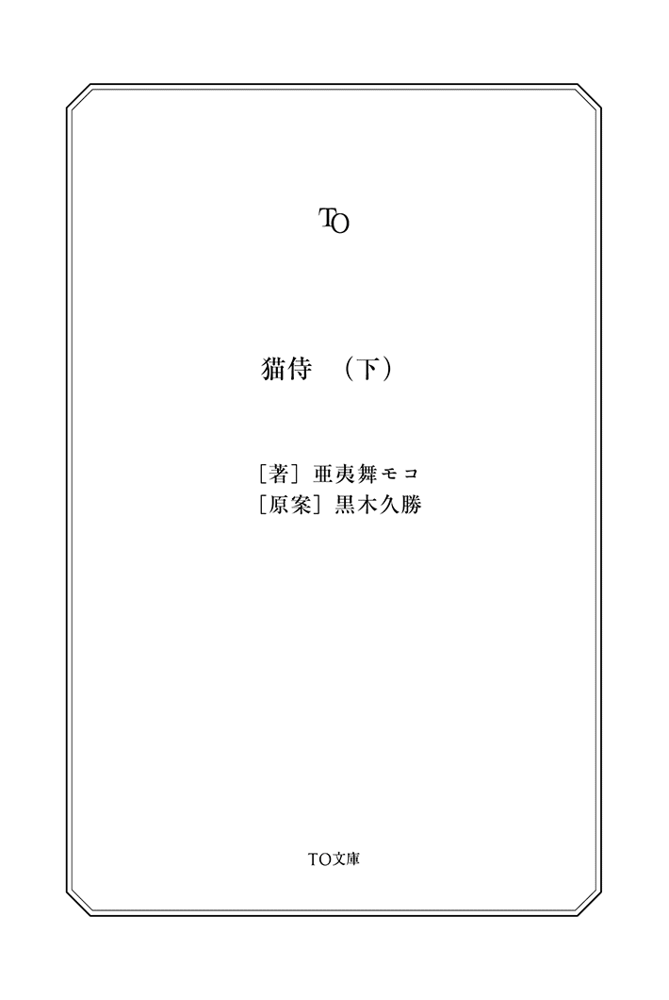

| 猫侍（下） (TO文庫) | |
| 亜夷舞モコ & 黒木久勝 | |
| (2013) | |
自分の心持ちが玉之丞によって変化しているのを感じる久太郎。そんな日々の中、久太郎はかつての好敵手、内藤と八百長試合をすれば仕官の仕事をやると持ちかけられていた。侍として断るべきか、家族のため誇りを手放すか。久太郎が悩む一方で、佐吉も騙されていたことを知り再度の玉之丞殺しと久太郎への復讐を他の侍に頼んでいた。武士になって家族を呼ぶという"夢"と今危機にある玉之丞の"命"。久太郎はどちらを選ぶのか──。

猫侍（下）
山吹色の日輪が煌々と輝き始めた爽やかな朝。
ほおずき長屋の障子に金色の光が透き通って、部屋の中に一日の到来を告げていた。
早起きのスズメたちが長屋の屋根に集まって、今日も良い日だと言うかのようにさえずっている。そんな声で、狭い押入れの中の玉之丞はゆっくりと眼を覚ました。
まずヒョコリと顔を出し、前足から順に尻尾の先までゆっくり外へ出た。
朝の眩しさに眼を細め、「んー」と前足を踏ん張って背中を伸ばす。
大きな口を開けて「ふはあ」と欠伸。そして後ろ足、前足をぶらぶらとほぐして、白い尻尾を振ってみせる。最後に体全部を震わせて、猫の体操はおわり。
「にゃあ」
玉之丞の声で、ムクリと布団から体を起こす。
その男、斑目久太郎。
無双一刀流師範の腕前ながら、現在無職。
猫の鳴き声一つで眼を覚ますとは、さすが侍というべきか、それとも猫の飼い主としての自覚が出てきたということか。そんなことはさておいて、彼は障子の外が明るくなっているのを見ると、首筋を掻いて「朝か......」と呟いた。
久太郎が布団から起き出したのと同時に、寺の鐘が朝を知らせる。
外に出て、井戸の水で濡らした手ぬぐいで顔を拭く。冷たい水にすっきりと目が覚めた。長屋に戻ってくると、玉之丞も舌で体をキレイに舐めている。それを見て久太郎はすっかり心が和みきっていた。玉之丞がここに帰ってきた幸せで、心も体も綻んでしまう。
戸を開ければ、朝の清々しい風が長屋の寂れた一室に吹き込んだ。
戸は開けたままにしておこう。
裏庭に続く障子も開け放つと、部屋の汚れた空気をすべて吐き出してしまう。一日の始まりに、昨日であった部屋を「今日」にする。
久太郎は玉之丞の隣に座ると、背中を撫でてやる。
「いつからだろうな、お前の声で、目覚めるようになったのは」
無意識に、外を見ながら玉之丞に話し掛ける。
彼はハッとした顔になると、額に手を当てた。
（あ......猫に話しかけてしまった......）
もう一度、手ぬぐいで顔を拭き直した。
猫は狭い所を好み、変な隙間に入りたがる。だとしても久太郎の長屋は狭いので、家具と壁の間のようなそんな隙間はほとんどない。しかし、玉之丞は押入れの中に仕舞っておいた魚籠の中をとても気に入ったようだ。玉之丞がいつまでも出てこないので、仕方なくそのまま魚籠を担いで猫見屋へと向かった。
しかし道の途中で、久太郎はこれは意外といい方法なのではと思う。
玉之丞を斬った者がいることは、町中で知られている。が、久太郎が下手人であるというのは知られてはいけない。だからこそ、この魚籠は素晴らしい方法だといえた。
まず玉之丞を隠せる。
さらに両手が自由になる。
懐に隠して引っ掻かれることもない。
一石三鳥だなと、くだらないことを考えながら、久太郎は土手を歩く。
土手の下を流れる川は美しく澄んでいる。周りの草木も青々と茂って目に眩しい。川べりでは、何人もの子どもが遊んでいるのが見えた。
彼が歩く先に見えてきたのは、若菜の屋台だった。どにゃつぼうを揚げる油の匂いと、甘い匂いが漂ってくる。大声で客寄せをしているようだが、周りには立ち止まる者も買う者も見えない。
「いらっしゃい、いらっしゃい！ 南蛮渡来のどにゃつぼうだよ！ 美味しいニャン〜！」
久太郎はその前を通り過ぎようとした。不器用ゆえに、自分から挨拶さえ出来ない男だ。一応彼女を見ながら、土手の上を通り過ぎる。
どにゃつぼうは若菜の手によってどんどん作られていて、油の中でパチパチと心地よい音をさせている。
「おはよう」
若菜は久太郎に気づくと、満面の笑みで声をかける。
だが久太郎は、その明るい笑顔がどうしてなのか理解できない。貧乏なのになんでこいつは笑っていられるのか。
「今日も、全然売れないよ〜。なんでも、最近近くに変な店が出来たらしいのよね〜」
「......そのわりには楽しそうだな」
「笑う門には福来るってね」と、若菜はもっと楽しそうに声を弾ませる。
「......のん気な奴だ」
暗い久太郎の顔にびしりと指を突きつけ、「怖い顔には鬼が来る」と若菜が言い放つ。
今のところ鬼のように恐ろしいものは訪れていない。もしかしたら、貧乏神の二、三人くらいは長屋に住み着いているかもしれない程度に貧しいが。
（鬼じゃなく、猫は来たけどな）
ふと魚籠に目をやる。玉之丞が静かに中で丸まっているのが見えた。
「すいませーん」とお客が店の前に。
「どにゃつぼう一本ください」
若菜は「ほら、福が来た！」としたり顔で久太郎を眺める。
「ありがとうございますニャンー！」と屋台へと戻って行く。
幸せか、そうじゃないか──彼女の顔を見れば明らかだった。
◆
「熱もないし、脈も正常。毛並みも申し分なし」
玉之丞は診察台の上で、気持ち良さそうに「ごろごろ」と喉を鳴らす。猫見屋の女主人・お七の手つきはもはや診察ではなく、ただ玉之丞を気持ちよくさせるために動いているように見える。
優しく喉を撫でられて、玉之丞は気持ち良さげだ。
「イライラしたようなとこもないし、さては、こうやって遊んであげたんでちゅね〜」
どこから取り出したか、彼女の手には猫じゃらしが──。
それを小刻みに動かし、玉之丞の気を引く。玉之丞は、一心不乱に小さな手をちょいちょいと動かして、それを捕まえようとしている。目の前に来た猫じゃらしに、さっと駆け寄るが、すぐに離れ、それをまた追いかける。診察台の上を元気よく駆け回る。
お七は何もかも見知ったような眼を向け、赤子をあやすような言葉で久太郎をからかった。
（......嫌な女）
と心の中で毒づく久太郎。
「さて──」お七は猫じゃらしを止めずに声のトーンを落とす。
「お遊びはここまで」
「？」
お七は袂からそろばんを取り出し、手元で弾いていく。
「診察料二百文、薬代が一両で、合計一両と二百文になります」
お七は、わざわざ高く作った声と可愛いらしい仕草でそろばんを差し出した。今までの未払いがまとめられた紙の束も。
だが、そんな金を久太郎が今すぐポンと払えるわけもない。
妻から送り返されてきた金があるとはいえ、あれが消えてはこれからの生活が絶望的だ。
「......ツケで」
「断る」
お七はまるで歌舞伎役者のように手のひらを久太郎にかざし、堂々と言い切った。
今の彼に払える手立てはなく、財布の中にはわずかな金子が入っているだけ。それを支払ってしまえば、これからの自分の生活は──。
（嫌な女）
再び心の中で毒づいた。
財布の中を減らしてひもじい思いをするのは嫌だった。
久太郎が何とか言い訳を考えていると、お七は何かをひらめいた顔で言う。
「そうだ、あなた、剣の達人なんでしょ？」
「無双一刀流免許皆伝。人呼んで『天下のまだら鬼』」
「聞いたことないわね。そのあだ名、自分でつけた？」
「つけるか」
お七はそろばんを仕舞って、パンパンと手を叩いて話を変える。
「とにかく、その『鬼がわら』さんにぴったりの仕事があるんだけどな〜」
『まだら鬼』だ、と訂正しようと思ったが、馬鹿にされた後で言い直すのも恥ずかしいので止めた。
「こっちよ」
お七は玉之丞を優しく抱きながら、久太郎を猫見屋の裏庭へ案内する。
藪に囲まれた小さな裏庭だった。休憩用の腰掛や大量の薪が店の裏手に置かれている。近くには切り株に斧が刺さったまま置いてあるし、野良猫に餌をやるための皿が何枚もそこらに散らばっていた。
すでに何匹かの猫がいて、腰掛や地面に寝そべっている。
「しっかり働いてね」
肩を叩いて帰ろうとするお七。だが、久太郎は動こうとしない。
まさか、これを？ という顔でお七を見る。
「得意でしょ」
お七は片手で刀を振る真似をして、『同じでしょ』とでも言いたげだ。
だが、久太郎の顔はだんだんと眉間のしわが深くなっていく。嫌がっているのが誰の目からも明らかだった。斧を取ろうともしない。
お七はスッとそろばんを取り出し、
「診療代が......」と弾いていく。
「わかったわかった！」
斧を手に取って、深いため息をついた。
◆
「ああ......あ......玉や、どこだい......」
所変わって、加賀屋。
その猫部屋と呼ばれる部屋で与左衛門が床に伏している。今日はいつもよりうなされているようで、女中が心配して佐吉を呼び寄せた。入り口で台帳と睨み合っていた佐吉は、やれやれと立ち上がって奥へと下がっていく。
玉之丞さえいなくなれば、与左衛門がまともになるだろうと考えていただけに、困ったような顔と心配そうな顔を半々に、佐吉は猫部屋を訪れた。
「旦那様、失礼します」
分厚い羽毛布団に、張り替えたばかりの畳。立派な掛け軸の掛かった床の間。どれも立派な店の主人の持ち物である。猫に現を抜かしていなければなお立派である。
佐吉は主人の布団の横に座り、そっと与左衛門をゆり起こす。
「旦那様、大丈夫ですか」
「うああああ！」
大声と共に、布団を跳ね飛ばして体を起こした。
汗が額から、胸からだらりと流れ落ちている。
「また、悪い夢でも見たんですか」と佐吉は手ぬぐいを手渡し、主人を優しく宥める。
「いや......そうじゃない」
「へ？」
与左衛門は手ぬぐいを受け取って、自分で汗を拭っていく。
佐吉は不思議な顔をしたが、与衛門は至ってまじめに言った。
「夢の中に、玉之丞が出てこないんだ」
「......」
天を仰いで、彼は神仏に願うように呟く。
「悪夢でもいい。玉之丞や出てきておくれ」
佐吉は困った顔で、部屋から下がった。
主人には聞こえない所まで来て、ハア──と大きなため息を廊下に響かせた。
その後「少し出るよ」と女中や使用人に一声かけると、佐吉は表へ出た。
◆
（俺は、剣の道を究めた男だ）
薪がカンッと割れる。
（このまだら鬼の前に立ちはだかるものは、斬る！）
またも真っ二つ。
黙々と、口は開かず。
しかし、心の中では敵を斬り倒すような妄想を繰り広げながら、薪を斧で割っていく。見事に叩き割れられた薪が、いくつも地面に転がっている。
カンッと音がする度に、傍らで横倒しになった魚籠に入って眠る玉之丞の耳がピクリ。
再び薪が割れてピクリ。
（薪だろうと容赦はしない）
「おおおおおおおお！」と雄叫び。
斧を振り被り──一閃。
斧が心地良い音を立て、薪は寸分たがわずに両断されて左右に飛んで転がる。振り下ろされた斧は、切り株に突き刺さった。
（結構楽しい......）
斧を置き、薪を拾い集めにかかる。
さっきまで薪割りの音で耳をぴくぴくとさせていた玉之丞が、違う音を聞き取ったのか、今度は顔全体を上げた。音のした方向を見て、ふわあと欠伸をする。
草を踏み分ける音が久太郎にも聞こえて、手を止めた。
「ご苦労様〜、ちょっと一休みして頂戴」
お七が盆を持って、裏庭に現れた。盆には、握り飯と、茶の入った湯呑が二つ載っている。それを腰掛けの上に置き、お七は自分の湯呑を取った。
彼女が現れたのを察してか、何匹もの猫が集まってくる。トラやクロ、玉之丞のように真っ白なのもいれば、ブチもいる。ここらにいる野良猫たちは、みんなお七の猫まんまを気に入っていて今日も寄ってくる。
すると彼女は急に立ち上がって、懐から猫の餌を取りだすと、庭に置いてある皿に入れて回った。一つひとつに丁寧に、均等に分けてやる。
やって来た猫たちを撫でて笑う顔が、お七の一番の笑顔であった。
私財を投じて作った猫まんまも、蚤取り石鹸『シャボン』も猫たちのためだ。
皿に猫が集まってきて、ムシャムシャ。みんながちゃんと平等に食べているのを見届けると、お七は玉之丞を抱いて腰掛けに戻った。彼女は楽しそうに他の猫たちを眺め、まだ小さい玉之丞は抱っこされたまま直接餌を貰った。
彼女の手を、玉之丞の小さな舌が舐める。美味しそうに、幸せそうに。
猫たちが餌を食べているなか、久太郎も握り飯を頬張っていた。
玉之丞が一心不乱に舌を動かすのがくすぐったいのか、お七は堪えきれずに笑った。
だが、それを偶然見てしまった久太郎は、変に勘違いをしてしまった。
（まさか。これも料金が......）
そーっと握り飯を盆へ戻す。
それに気づいたお七が笑った。
「やあね、これはタダよ、タダ。ほんの気持ち」
久太郎は安心して食べかけの握り飯を取ると、また食べ始める。
さっきよりももっと勢いよく口に入れてガツガツと。
「どう、お口に合うかしら？」
「ああ」
「最近、いい顔してるよ」
ん？ と握り飯を口に含んだまま、お七を見る。米粒をたっぷりと頬に付けたまま。
「最初会ったときはさ、もっとこう......肩に力が入ってたっていうか。そんな生き方、窮屈だろうなって感じの印象だった」
一つ目の握り飯を食べ終えた久太郎は、頬の米粒に取り掛かる。
全てを取り終えてから、遠くに目をやって呟く。
「......俺は変わらない」
（変わってなんかない......たぶん）
でも、お七は笑って「そうかな〜？」と言う。
久太郎は分かっていない。でも、お七の胸の中では彼の幸せが猫まんまを食べている。
「きっと、あなたのおかげよね」
お七は、優しく玉之丞の喉の辺りを指でさする。
満足した玉之丞の眼が細くなり、笑っているように見える。
「私もそう。昔はもっと見栄や駆け引きの中で生きてた。裏切り、裏切られ、そのうちに本当のことが見えなくなって......でも、この子たちはウソをついたり、騙したりしない......だから、こっちも素直になれるのよね」
「......」
久太郎は何も言わずに、聞いていた。しっかりと金を回収するところや抜け目のない商売を見れば、彼女がどんな人生を生きて来たかが大体分かる。もっと生きづらい商売をしてきたんだろう。
薪割りをさせたことは、気まぐれかもしれない。
「変わった」と言ったのも、勘違いかもしれない。
しかし、お七の達観したようなものの言い方は、彼女がこれまでの人生で、多くの人間を見てきたことを思わせる。
フフと笑って、空気を振り払うようにお七は立ち上がる。
「食べ終わったらさ、薪を運んでちょうだい」
「運ぶ？」
「そ、お得意さんのとこにね」
久太郎は二個目の握り飯に手を伸ばしながら、嫌な顔になっていく。
それを見たお七が着物の袂をさぐり、そろばんを振って音をさせた。
「わかった、もういい！」
◆
久太郎は地図を手に、背負子に薪を積んで歩いてきた。地図はここをさしている。看板には「いやし処・猫茶屋」と書かれている。
「猫......茶屋？」
茶が飲める店にしてはしっかりとした店構えだった。
戸に手を掛けようとすると、それよりも早く開かれた。出てきたのは、派手な割烹着を着た女性。袖口にも、襟にも耶蘇教徒のような、刺繍の入ったヒラヒラした布が付いている。
店内は落ち着いた雰囲気の茶屋だが、どこにも猫、猫、猫。
客一人に一匹ずつ猫があてがわれ、客は猫と戯れている。
店員が頭を下げて、甲高い声で叫ぶ。
「いらっしゃいニャン、猫茶屋へようこそ！」
（な、なんだ？）
店の中の人間たちは手に猫じゃらしを持ち、湯気の立つ湯呑には目もくれず猫と遊んでいる。猫の形をした「かすてら」や干菓子も卓に載っているが、客のなかには茶も菓子も目に入らない様子で、猫と一緒にじゃれ合うものもいる。極めつけは猫用の櫛でわざわざ毛づくろいをしてやる人間までいた。
「タビちゃ〜ん、可愛いねー」
「ああ、今日もサチは、モフモフだよ〜」
そこかしこでモフモフ。
モフモフ。
「おはよう、チャコ〜。今日も遊ぼうねー」
「うわー、可愛い手がぁ〜」「肉球が〜」
どこの座卓でも肉球をモキュモキュ。
モキュモキュ。
その様は、猫にまたたび、の反対に人間が猫にメロメロにされている。
店員は、説明を続ける。
「心の傷、疲れ、乾きなどの諸症状には、うちの猫ちゃんと友達になるのが一番です。お好きな猫ちゃんに癒されてくださいニャン」
と久太郎を奥に連れ込もうとする。だが、「客ではない」と差し出された手を払う。
「えっと......どちらさまですか？」
「猫見屋の使いだ。店長殿は？」
久太郎が正直に名乗ると、女の眼の輝きがみるみるうちに消えて声も低くなる。
「んだよ。店長は、アタシ。じゃあそれ、勝手口から出たとこに置いといて」と店の奥を指して、さっさと引っ込んでしまった。そのあとは完全に無視されている。客以外はいないも同然という態度だった。
薪を置いて出ようとするまで、見向きもされなかった。
（客商売の表と裏だな）
さっさと店を出ようとするも、店の猫が久太郎の足に纏わりついてくる。その猫を追う客もまた久太郎の足にぶつかる。久太郎は転倒し、店を出ようにも出られない。
二度目の転倒の後、後ろから声をかけられた。
「おやまあ、これまた奇遇ですな」
振り返ると見知った老人がニコニコと笑っていた。
町一番の猫好き・義一であった。
（出た〜、猫じじい）
「いや〜、素晴らしいお店が出来ましたよ。猫に囲まれて、まさに天にも昇る心地ですよ」
恍惚とした顔で一方的に喋りはじめる義一は、本当に天に昇りそうだった。
「ご覧ください、お侍さま。店にあふれる幸福感。みーんな猫が大好き」
楽しそうな義一の顔の後ろで、こそこそと怪しく入店する若菜が見えた。
「あ、お侍さん」
（......また余計なのが来た）
若菜が近づいてきて、久太郎に耳打ちする。
「偵察よ、偵察。どにゃつぼうが売れないのはここのせいらしいの」
義一は店の奥を指し、中へ導こうとする。
「お知り合いですか？ さあさ、お二人ともこちらへ」
と言われても、猫見屋の使いが長居するのもどうなのかと、久太郎は踵を返す。
「帰る」
「えー、一緒に偵察してよ」
「帰る」
「まあま、そう言わずに。おいしいお茶をごちそうしますよ」
義一の言葉に、ぴたりと足が止まる。
「おいしい羊羹も付けますが」
数分後、久太郎は席について茶を啜っていた。
お客が随分と増えてきたが、おかしな客は減ったようだ。猫を異常に溺愛する人間の多くが帰り、少し店内は落ち着いてきた。今はまともな客が多い。
静かに猫を膝に載せ、ゆっくりと撫でてやる者もいれば、一緒に寝転んでいる者もいる。中にはそのまま夢の世界へ行く者も。
猫茶屋の店員は、全員があのヒラヒラした服を着ているようで、派手な割烹着は目にうるさい。
「お待たせいたしました。当店自慢のヨウニャンです」
「ヨウニャン！」と若菜は驚く。
若菜のどにゃつぼうは猫の顔を象ったものだが、ここの羊羹は猫の姿全体を影絵のように描いている。それに、どれもこれも形が違う。手間が若菜の店以上にかかっているのは言うまでもないだろう。
「どうぞごゆっくりだニャン！」
「ニャン!?」
若菜は目を白黒させ、店員の女性から目を離せないでいる。
そのままずっと目で追い、見えなくなるとやっと彼女は我に返ったらしい。
「完全にパクられてるんですけど！」
真似された真似されたと、若菜はやかましく騒ぎ立てている。
義一は猫に夢中でずーっと膝の上の猫を撫でており、久太郎も若菜を無視して羊羹を口に入れる。自然に口角が上がってしまう。甘い。美味い。
若菜の混乱は、次第に別の怒りへと変わっていった。
「そもそもなんでこんなに繁盛してるの？ 猫なんか家で飼えばいいのに」
「お嬢さん、それが出来ればどれだけ幸せか......」
「え？」
義一は目を細めて、周りを見渡した。
皆が猫と楽しそうに遊び、幸せそうな顔をしている。
「猫を飼うには、金がかかる」
義一の言葉に、久太郎は激しく頷いた。金に足が生えて鼠のように逃げ出した彼の懐は軽くなり、あとには玉之丞の毛だけが残っていた。
猫も人も生きるためには同じように金を使うのだ。
「猫嫌いの大家もたくさんおる。飼いたくても飼えない人がこれだけおるということじゃ」
「ふうん」と若菜は頷いて、ぐるりとまわりを見回す。
「ワシのように家に猫がいても、つい足を運んでしまうのもおるが。イヒヒヒ」
「猫が好きなんだね」
若菜は、義一に笑いかける。
義一もそれに応えて笑う。猫を撫でる手は優しく、愛に溢れている。
「命の恩人じゃ」
「恩人？」と若菜は聞いた。
久太郎も、くっと眉を吊り上げる。
「昔の話ですが......その......博打に狂いましてな。家族も、財産も、住む家も、すべて失った。夜は凍えるほどに寒かったし、腹の中はからっぽで苦しい思いもした。何日もそんな状態が続いたもんです」
久太郎も若菜も、信じられないという目で義一を見る。
楽隠居した好々爺という雰囲気からは、かけ離れた人生を送っているようだ。
「もういつ死んでもいいと、投げやりになりましてなあ。屍のようになったワシに、野良猫だけが寄って来た。猫は良い。わかったようなことを語るでもなく、ただ傍にいても温もりを分けてくれる。だから、今でも猫だけはワシの生きる糧なんですよ」
義一は、ずっと優しく猫を撫でていた。
その顔は、やっぱり単なる猫好きの優しい老人にしか見えなかった。
◆
しばらく若菜は義一と楽しそうに話をしていたが、義一はすでに茶を飲むのを止めて、猫を可愛がっている。しかし猫かわいがりというにも限度を超えているように見えた。
連れだと思われるのが嫌で、若菜と久太郎は他人のフリを決め込んで帰ることに決めた。
だが、若菜はすぐに帰る気はないようで、店の奥に入っていった。
そこは店員たちの仕事場であり、壁には立入禁止の張り紙がある。狭い部屋だったが、店員すべてがしっかりと猫の体調管理に励んでいるようだ。猫の健康状態を観察する者もいれば、毛並みを整え、体を揉みほぐしてやっている者もいる。
猫のために全員が全力を尽す。
若菜は感心した顔をしていた。
「店の人、頑張ってるんだね」
それを見て少しは怒りも消えたのか、彼女は店の出入り口へと真っ直ぐ歩いていく。
店を出る際「ありがとうございましたニャン。また来てニャンニャン」と店員に頭を下げられ、若菜は小さな声で「最後までニャン？」と目をぱちくりさせた。どうやら徹底して店員を教育しているようだった。
久太郎は背負子を背負い直して、猫見屋に戻らないといけないのを思い出す。
「じゃあ、私も途中まで」と若菜はついて来るようだった。
久太郎が背負子を背負う間も、若菜はずっと凄い勢いで喋っている。真似されたと怒ってはいたが、それでも楽しい体験だったのだろうと久太郎は考えた。
久太郎自身も、やはり楽しかったという他なかった。
「でも、見た？ お爺さんの可愛がり方、半端ないね。もう食べちゃいそうだったよ」
笑いながら店を出たが、彼女の顔はすぐに固まり足は前には進まなかった。
立ち止まったままゆっくりと見えたものを指し示す。その指も、その腕も震えていた。顔も血の気が引いて、白へ青へと変わっていく。
久太郎も若菜の指の先をじっくりと見る。
若菜の屋台が──バラバラになっている。
本体はただの木片となって散らばり、のれんはボロキレのように引きちぎられてしまっていた。残っていたどにゃつぼうは地面に捨てられ踏みつぶされて、草履の痕や泥が付いていた。
屋台の残骸の向こうで、男が一人、下卑た笑みを見せていた。
そのヤクザ者は二人の仲間とともに若菜を見て笑い、悲しむ若菜の様子を楽しげに眺めている。
長屋で若菜に難くせをつけていた男だ。確か、新吉と言っただろうか。
久太郎は、強くその男を睨む。
長屋にいたあの日、若菜の悲鳴が聞こえて、久太郎は外に飛び出した。目に入ったのは──悲鳴を上げたくせに、「ふんっ！」と拳を突きだす若菜の姿......。
その拳が見事なまでに、新吉の頬をとらえた。
「ぐあっ」
しょせん女の細腕では気絶するほどではなかったが、すぐに久太郎が止めに入ると新吉は無様に逃げ出した。
あの時のことを新吉は根に持っていたのだろう。
久太郎はその胸に、怒りがわき上がるのを感じた。
左手が自然と刀を摑む。許さない。不動明王の化身となったかのような眼で、新吉を睨みつける。
その殺気に気付いたのか、三人まとめて悲鳴を上げて逃げて行った。
久太郎は若菜を振り返った。彼女の凍りついた顔に、そのまま留まろうかと迷ったが、それよりも新吉を捕まえるのが先決と、久太郎は全力で駆け出した。
久太郎の刀が鞘から解き放たれた、刹那、二人の手下が地に伏した。刀の峰で腹を打たれ痛みで昏倒したのだ。久太郎はすぐに新吉へと歩みを進めていく。
新吉は長脇差を抜いて威嚇していた。
だが久太郎は、それを気にも留めずに向かっていく。まだら鬼の前では、ヤクザ者など素人同然であった。
一気に間合いを詰める。
白刃の光──新吉の眼前、一分の距離もなくそれが光った。
驚きのあまり、新吉は尻餅をついた。必死に体を探るが斬られてはいない。
「へへ、脅かしやがって」
と安堵した瞬間──彼の髪を束ねた元結が切れ、新吉は一瞬にして落ち武者のような姿に変わる。
「ひ、ひいぃぃぃ！ お許しくださいぃ!!」
新吉は地面に頭を擦りつけて久太郎に土下座すると、懐から小さな財布を取り出して前に置いた。「どうか、どうか」とさらに頭を深く擦りつけ詫びた。
命まで奪う気など久太郎にもはなからない。全力で彼が謝っているのが分かりさえすれば、それで許そうと刀を納めた。
来た道をすぐに駆け出した。
必死に走って猫茶屋へと戻ったが、そこには屋台の残骸も若菜も残ってはいなかった。久太郎は呆然と立ち尽くすしかなかった。新吉が申し訳なさそうに差し出した金子も、これでは無駄になってしまいそうだった。
走っている間握り締めていたそれを懐に大事にしまう。
若菜にはいずれ渡そうと心に決め、静かに猫見屋に戻った。
「お疲れさま」
猫見屋の戸を開けると、久太郎を出迎えたのは玉之丞とお七だった。
玉之丞は、お七の腕の中からピョンと飛び降りると、すぐに久太郎のもとに駆け寄ってくる。彼の手の臭いを嗅いで、舌で手を舐めてくれる。
そんな玉之丞が愛おしく、怒りが少しずつ落ち着いていった。
「どう。なかなか面白いお店だったでしょう？」
反応がはかばかしくないので、お七は心配そうに覗きこんだ。
久太郎の表情は、いつもよりも深く暗い。
「本当に、猫には......」急に久太郎は口を開く。
「......人を、癒す力があるのか」
お七は驚いたが、すぐに優しく問いかけた。
「......どうしたの？」
久太郎のただならぬ雰囲気は消えることはない。
お七は、そっと静かに微笑んで見せた。優しく、諭すように。そして何よりも、久太郎に気づいてもらうために。
「そんなの、あなたが一番知っているはずよ」
静かに彼の眼が決意の色に変わった。
久太郎は玉之丞と共に、若菜と向き合おうと決めた。
◆
帰り道、久太郎は朝と同じ土手を通る。
既に日は傾いて、土手は紅に染まってきた。遠くに小さく黒い影が止まっている。近づいてみれば、それは若菜の屋台だった。壊れた所は何とかくっつけたらしく、ボロボロだが引っ張れば動く程度には直っている。
しかし、以前のような姿に戻すには、もう少し金も時間もかかりそうだった。
さっき新吉が差し出してきた金は修理代に足りるだろうか。そんな心配をしてしまうほど屋台はボロボロに壊れていた。
土手を少し降りたところに、若菜はしゃがみ込んでいた。
隣に座るが、いつものように明るい反応は返ってこない。
顔を覗くが生気がなく、ずっと川面から目を外さないでただ座り込んでいた。
風が吹いた。
若菜にかける言葉は出ない。
「......もうどこにも帰る場所がないんだ」
静かに若菜は言った。悲しそうに。迫る夕闇に溶けるように淡く。
だんだんと日は落ちて、山の向こうに隠れてしまいそうだ。
「......アタシの家はね、田舎の貧しい百姓なの。来る日も来る日も痩せた土地を耕して。でも、つらいなんて思ったことない、家族で仲良く暮らせるならそれで良かったの。でもね、一番下の妹が肺病にかかって......薬代のために、おっとうは、あたしを遊郭に売ろうとした......」
※ ※ ※
若菜が住んでいたのは、周りを小高い山に囲まれた、都から遠く離れた村だった。
ポツリポツリとしか建っていない数軒の家、家々が持つ小さな畑。
それが若菜の知る世界だった。
小さく痩せた畑からは野菜も満足に採れず、どの家も活気がない。野菜も米も、それどころか稗や粟ですら、村の備蓄としてほとんど残っていなかった。
村人が生き残るには、誰かが村のために犠牲になるしかない。
村の娘を遊郭に売れば、村人全員が助かる。
そんな取引が村の長の所へと持ちかけられたようだった。その候補の中には、若菜も入っていた。
彼女の家では病気の妹の薬代が家計を蝕んでいた。他の家から金を借り、食べるものを貰い、細々と生き残っていた。村の中では迷惑がられており、村人はこぞって若菜を売ってしまえと口にした。村長もその声に従ったに過ぎない。
若菜はすぐに売られることが決まり、他の売られていく娘もみな似たり寄ったりの境遇だった。
だが、遊郭に娘を仲立ちする女衒が来る日、若菜はこっそり自分の家から逃げ出した。
「どこだ若菜！ 出てこねーと、お客さん帰っちまうだろ」
「そうよ、若菜。早く出てきて」
売られるのは、どうしても嫌だった。
次第に村中の人間が若菜を探し始め、だんだんと逃げられないことが幼心に分かった。逃げ切るためには手段は問わないとまで思うようになっていき、ついに──
彼女は、父親が農作業に使っていた鎌で無理やり髪を切って逃げた。
ぼさぼさの頭で、江戸まで必死に歩いた。
途中で何度死にかけただろうか。その度に、何度も、優しい人たちが若菜を助けてくれた......。
※ ※ ※
「嬉しかった。生きてもいいって思えたから。そうやって、逃げ出してきた。心の中で謝りながら。女郎になるよりもいっぱい稼ぐから、堪忍して下さいって。でも......」
悲しみや悔しさが言葉をせき止めてしまう。
「にゃん」
魚籠から玉之丞の声がして、体を必死に伸ばして顔を出した。
「猫？」
「ああ......玉之丞だ」
久太郎は玉之丞を魚籠から出してやって、若菜に見せた。
まだ小さい玉之丞を見て、若菜の顔は自然と綻んだ。玉之丞を両腕でしっかりと抱きしめると、青かった顔がだんだんと血色を取り戻して行く。猫の優しい「ぬくもり」が玉之丞から若菜へと染み込んでいくのを、傍にいた久太郎も感じていた。
「......あったかい」
玉之丞の顔に、ぽたりと涙が落ちる。玉之丞は見上げて、鳴いた。
その雫は多くなり、若菜の嗚咽は次第に大きくなる。でも、それでいいのかもしれないと久太郎は思う。猫の温かさも、猫のいる幸せも若菜の心に染み入ったのだと。
玉之丞を抱いて泣く若菜の手に、久太郎は財布を握らせた。
若菜は不思議そうな顔をする。
「これは......？」
「新吉からだ」
若菜は泣き笑いのような表情を見せた。
「これで屋台を直せる。助かるよ。ありがとう」
そう言うと、若菜は大きな声で泣き始めた。
若菜が泣き止むまではここに居ようと、久太郎は思った。
◆
玉之丞がせわしなく畳の上を走り回る。
猫の爪のせいで畳もだいぶ悪くなってきたのが気にかかる。畳は換えられないが、玉之丞のために猫じゃらしは新しくした。
二代目の猫じゃらしの毛先を素早く動かせば玉之丞が飛びついてくる。ゆっくりと動かせば止まって狙いを定める。
小さなおしりを振りながら、猫じゃらしに飛び掛かる準備をしはじめる。一気に猫じゃらしを引けば、凄いスピードで飛び掛かって来る。
真剣な玉之丞をよそに、久太郎は寝転がったまま、心ここにあらずというふうに猫じゃらしを動かしていた。
久太郎は故郷のことを考えていた。
（昼に若菜の話を聞いたからか）
※ ※ ※
我が家の三和土で、草履の紐をしっかりと結び直す。
一家の主人が家を出ようとするときは、家族揃って見送るものであった。しかし久太郎は、自分に見送られる資格などないと思っていた。誰も出てくる必要なんてないのだと、黙って家を出ようとする。
しかし、その後ろから声を掛けられた。
「父上、本当に行ってしまわれるのですね」
「おハル。......お静は？」
「お見送りする気はない、と......」
「......そうか」
腰に刀を差し、小さくまとめた荷物を肩に担ぐ。
おハルが震える手で、笠を手渡す。不器用な久太郎の手は、その頭すら撫でてやることはない。
「行ってくる」
「いってらっしゃいませ」
家を出て、寂しくなって後ろを振り返る。
久太郎には見えなかったが、壁の向こうに妻がいるような気がしていた。申し訳ない気持ちでいっぱいになり、ただただ心の中で詫びる。
絶対に立派になって帰ると誓った。
※ ※ ※
「若菜にも俺にも、背負っているものはある」
久太郎はおハルに話しかけるかのように、玉之丞に話して聞かせた。
◆
闇が深まった江戸市中、道の脇に立つ石灯籠に蝋燭が灯っている。
その道を、顔を伏せながら提灯も持たずに神社へと向かう人影があった。周りを気にしながらこそこそと動くが、逆に目立ってしまっていた。
屋台で蕎麦をすする者たちは、怪しい人影を目撃し、迅速に番所へ知らせていた。
神社の裏についた怪しい人影の正体は加賀屋の番頭・佐吉。
佐吉は一心不乱に祠を漁っていた。
玉之丞の骸の入った猫壺を持ち出して、別の場所へ隠そうとしているのだ。
「もう骨になっちまったのかな？ 旦那様が夢で会いたいってよ。屋敷の庭にうめてやるからさ、たまには出てやってくれよ」
と猫壺を抱きかかえる。
主人への愛はあるのだが、その愛はなんだかいびつである。
「夢の中だけな。あと、俺のとこには出て来なくていいから」と呟きながら、逃げるように神社を立ち去ろうとした。
「ここいらって言ってたよな」
「ええ、怪しい奴がいるって」
突然聞こえてきた声にビクッと震え、佐吉はこっそり裏から逃げようとする。
藪を越えて出れば逃げられるのではと思ったが、少し歩いただけで同心の石渡と岡っ引きの八五郎にばったりと出会ってしまった。
佐吉は提灯に照らされ、顔を見られた。
「おい、佐吉じゃねーか」と八五郎。
「あっ、はい」つい正直に答えてしまった。
佐吉の背中に汗がだらりと流れる。
石渡の提灯が佐吉が抱えているものを照らす。
八五郎は壺を指さして「何だそれ？」と訊く。
「悪霊退散と、成仏って書いてあるが......」と石渡が壺に張ってある札を読む。
「佐吉、これは何だ？」
佐吉は目を泳がせた。
「これは、あれです、石渡の旦那。な、なすの漬物」
「は？」
「なすの漬物ですよ、旦那。それじゃあ、急ぎますんで」
壺を抱いて大急ぎで逃げ出す佐吉の姿は、あまりにも怪しかった。
なすの漬物だとしても、こんな時間にそんなものを持って神社をうろつくのはおかしい。
誰だってそう思うだろう。
「なんだ、アイツ？」と、八五郎は首を傾げた。
だが、石渡は何をどう考えたのか確信を持ったようだった。
「ちょっとつついてみるか」
「へい」
石渡と八五郎は、静かに佐吉の後を尾けていった。
◆
そんな騒動は知らぬまま、玉之丞と静かに話を続けている久太郎。
「人は誰しも、過去を背負って生きているのだな」
玉之丞を撫でながら「猫だってそうだろ？」と声を掛ける。
しかし、そんな玉之丞はスヤスヤと小さな寝息をたて、撫でるたびに心地よく尻尾を動かしていた。
（あっ、また猫と話している......）
そんなことを思ったが、あまり気にしないことにした。
『いつの日も 明日を信じて 進むのみ
変わらぬ昨日を 恨むことなく』
静かに世は更け、今日は昨日になって行く。まだ見ぬ明日を信じて。
「はあ！」
久太郎の声が、朝の長屋に轟く。
裏庭で、木刀での素振りを日課として始めたのだ。
ボロの着物を上半身だけはだけて、一心入魂して木刀を振る。滝のような汗を流すことで身を一段と引き締め、精神を研ぎ澄ます。
その眼光の鋭さは鬼と呼ばれるに相応しい。
ヒュン──と木刀が空を斬る。
ギュッと手首を絞り、腰の高さで剣を止める。
その鋭さ。
その強さ。
再び剣を振りかぶり、「はあ！」と振り下ろす。まだまだ捨てたものではない。
「にゃあ」
玉之丞が背を伸ばしながら押入れを出てくる。
それに気づいて、久太郎はふと手を止めた。
「遅い。今日から忙しくなるぞ」
玉之丞は、体を舌で舐めて綺麗にし始める。
猫が久太郎の熱気を理解するようなことはない。ゆっくりと欠伸をしながら、新しい寝床のザルの中へと身を収めた。
クルリと丸くなるとちょうどいい大きさで、玉之丞が入ると真っ白な綿がザルいっぱいに盛られているように見える。
猫はのん気だなと思ったが、再度集中して剣を振りかぶる。
「はあ！」
久太郎の掛け声と、ヒュンと空気を切る音。
一瞬の静寂の中、長屋の戸がトントンと叩かれた。
久太郎は入り口を見る。障子に人の姿が見えるのに、部屋の中に入って来ようとはしない。入ってくればいいのにと思いつつ足の裏を拭き、庭から入り口まで戸を開けに行く。
「おはよう！」
若菜がそこに立っていた。いつも通りの笑顔で、いつも通りに元気だった。
「笑う門には福来たる」と言っていた若菜だ。だからこそ、悲しいことがあった分だけ余計に元気なのだろうと久太郎は思う。いつか来る福を夢見るように。
「これ」
若菜は手に持った袋からどにゃつぼうを一本取り出す。
「タマちゃんにあげて」
後ろを振り返れば、玉之丞は匂いに反応したのか、ザルから顔を上げていた。
だが、こっちに来るわけでもない。まるで持って来いと言わんばかりだ。
「ありがとうって伝えておいてね」
「俺の分は？」
若菜は満面の笑みを久太郎に向けた後、身をひるがえして、停めてあった屋台を持ち上げる。
屋台は見栄えは悪いものの、引いて移動できるくらいには修理されていた。これならどにゃつぼうを揚げるのに問題はなさそうだし、十分営業できるだろう。
「さあ、今日もいっぱい働くぞー！」
「がんばれよ」
「え？」
久太郎の口から無意識に言葉が出ていた。しかし、訊き返されても困る。
恥ずかしがる顔を見せまいとして、彼は後ろを向いて部屋へと戻った。
「とりゃー」と屋台を引き駆けて行く若菜の顔は、とても明るい笑顔でいっぱいだった。
部屋に戻ると、玉之丞が久太郎の膝へと擦り寄ってくる。それだけではなく爪まで立てて、久太郎を無理に座らせようとする。
肉に鋭い爪がサクリと刺さる。
「痛い！ 分かった。分かったから」
どにゃつぼうを手で小さく千切って、玉之丞の餌皿に入れてやる。
「お前にだ。感謝してたぞ」
玉之丞は夢中になって食べ始め、皿はどんどん前に動いていく。しまいには、皿も玉之丞も壁へとぶつかる。思わず久太郎の顔に、笑みがこぼれる。
皿を元の場所まで戻してやると、玉之丞は顔を上げることなくそのまま付いて来る。
「俺も、また仕事を探そうと思う。傘貼りや薪割ではなく、藩に仕える武士としての仕事をするために」
玉之丞の頭を強く撫でると、再び木刀を握って裏庭へ。
自分は武士だと決意するように、強く振り下ろす。
「ハアッ！」
もっと、もっと鋭く。強い侍になるために。
◆
魚籠を下げた久太郎が猫見屋へと入って来る。
「いらっしゃい」
お七は、すぐさま笑顔で店の入り口まで出てくる。
「今日、『鬼がわら』さんは何のご用ですか？」
（わざとか？）
ピクリと眉が動く。
しかし、わざわざ反応するのも面倒なので、そのまま流す。
「......すまないが、今日一日預かってくれ」
「あら」とお七は驚いた顔をする。
「どこかお出かけ？」
「仕事を探す」
ちゃんとした侍になろうと決意したのだから。
お七は指で裏庭を指すと、「薪割りならまだあるわよ」とニヤニヤ笑った。
「女手だけじゃ薪割りはキツイのよね〜」
と、お七は自分の腰を叩いて、困っていることをこれ見よがしに伝えてくる。
自分が楽をしたいだけだろう、と久太郎は以前にもお七に見せた『嫌そうな顔』になった。
だが、すぐに顔を『普通に怖い顔』に戻す。久太郎本人としては『通常の顔』だ。
お七に何か言われる前に玉之丞を魚籠から出して手渡すと、きっぱりと言った。
「城勤めだ」
「まだあきらめてなかったんだ」
お七は驚いた顔をしながら玉之丞を受け取る。
「そのために江戸に来たんだからな」
久太郎の自信満々の答えに、お七は玉之丞に「スゴイやる気でちゅねー」と子供をあやすように話しかけた。
（それ、むかつく......）
馬鹿にされているみたいだ。
◆
「知るかよ。たかが猫だろう」
青年は、石渡と八五郎の聞き込みにそう言い放った。
石渡は青年の胸ぐらを摑むと、路地裏へと連れ込んだ。
青年を壁へと叩きつけ、太い指で青年の首を締め上げる。そして恐ろしい顔で怒鳴った。
「たかが猫だと......？ テメーの大切なもんが無くなっても、そんな言葉を吐けんのか！」
「まあ、そのへんにしといてあげましょうよ」
八五郎は、石渡の腕を青年から解いた。すっかり気の抜けた青年を放置したまま、石渡と八五郎は路地裏を去った。
あれからずっと聞き込みなどをしているが、まだ玉之丞の手掛かりは何も摑めていない。
「ここらで、猫に詳しい奴がいると言えばどこだろうな？」
「さあ？」
と、八五郎は首を傾げる。
「テメー、ふざけてんのか」
「だって、あっしは犬派で......。というか、そんな詳しい人間、知らないですよ」
「ああ!?」と睨む石渡。
「い、いえ、なんでもないです」
「このままブラブラ探してみるか。何か有力な証拠でもあればな」
道を歩き続けていると、長屋の連なる地区へと辿りつく。
久太郎のいる「ほおずき長屋」もそこにある。
二人の目の前を、猫がささっと通り過ぎる。ブクブクと太ったトラ猫だったが、口に小さなメザシを咥えていて、その後ろを古臭い着物を着た若い女が箒を持って追いかけていた。
「長屋......人も多ければ、その食いもんを貰おうとする猫もいるかもな」
石渡は顎を撫でる。
「行ってみましょうか？」
「ああ」
二人は長屋通りへと入って行った。
ほおずき長屋の近くで、白猫がまっすぐ二人の横を駆けて行く。それを二匹の別の猫たちも追いかけていく。
八五郎は早合点して「玉之丞だ」と声を上げたが、石渡は黙って首を横に振った。
「あれは、違う猫だ」
「どうしてですか？」
八五郎は納得できないと訊き返す。
「ああ？ 決まってんだろ、全然美猫じゃ......」
「はあ？」
「......いや、玉之丞は立派な屋敷で育てられた家猫だ。それが簡単に他の猫たちに仲良く交ざれるわけもない」
「はあ......確かにそうですね」
「だったら、さっさと他のことに目を配れ。他の手掛かりを見つけろよ」
そのとき、道の先で「ほおずき長屋」の大家がクシャミをした。
先程の猫が大家の横を通り過ぎて、向こうへ走っていくのが見えた。
石渡が大家に「猫がダメなのか？」と訊く。
「ええ、昔から猫だけは駄目でね......どうもクシャミが」
しかし大家は、石渡の出で立ちを眺めて同心であることに気づくと、急に畏まった声で訊いた。
「ところで、何かご用ですか？」
「ああ、最近加賀屋の主人の猫が斬られる事件ってのがあったんだが、知ってるか？」
大家はポンと手を鳴らして、頷いた。
「知ってますよ。可哀そうな事件でしたが......このとおり猫は苦手なもんで、まあ少し悲しめないっていうのもありますがね」
八五郎は、石渡が大家を怒鳴りつけるのではと心配になったが、石渡の顔はまだ余裕を見せている。
大家が少し考えて言う。
「ああ......でも、そのころからちょっと気になってることが......」
「なんだ？」
「そこの家なんですけどね──」
大家が指したのは、久太郎の部屋。
「この前から部屋に入るたびに、クシャミが出るんですよ。この前の事件が起きたあとくらいから急に」
それを聞いて、石渡と八五郎は顔を見合わせて意味ありげに笑いあった。
「ほお、これは有力な手掛かりだな」
「ただちょっと、そこの侍ってのが恐ろしい人でね......」
話も尻すぼみのまま、大家はそそくさと立ち去った。
石渡と八五郎は、聞き込みを開始する。
大家が言っていた久太郎の家は留守で、その隣も留守だった。
反対隣りの小さな男の子は、よく喋る子供で、笑って二人に話を聞かせてくれた。
「侍のおじちゃんが住んでんだけど、よく家でグータラしてるよ。この前もさ、アイツ、寝小便したみたいで、朝に布団を干してたよ。俺だってもうしないのにね、おかしいだろ。今日は竿も持ってないのに、魚籠担いでどっか行っちゃったよ」
「魚籠に、寝小便な......」
「どうかしました？」
八五郎の問いに、石渡は答えなかった。
男の子の頭を乱暴に撫で、「いいとこ見てるな。坊や、大きくなったら岡っ引きにでもなりな」と褒める。
「じゃあ行くか」と石渡。
「え？ どこにですか？」
急に話を振られて、八五郎はおろおろする。
「もう一度、加賀屋の佐吉の方を少し詰めてみようかと思ってな」
石渡は懐にある十手の柄を握った。
◆
「与左衛門さまが、また......」という女中の一言で、佐吉は猫部屋に飛んで行かざるを得ない。部屋に行って、少し障子を開けてみれば、女中の言うとおり「また......」という様子だった。
「うふふふ......、ぐふふふふ......」
与左衛門が眠りながら不気味な声を出して笑っていると、女中たちが先ほどから何度も佐吉に知らせに来ていた。
女中たちは与左衛門の部屋に行く度に気味悪がって、「お医者様に来てもらわなくてもいいのでしょうか」などと気を回す始末である。そのたびに「大丈夫」と答えながら、佐吉も一応様子を覗きに来ているのだった。
今日十度目になる猫部屋の確認に、佐吉はついにため息を吐く。
昨日から猫壺は裏庭に埋めてある。与左衛門の近くに連れてきたおかげで夢に玉之丞が出たのだと佐吉も一度は喜んだが、女中が何度も血相を変えて呼びにくるために、仕事にならない状態だった。
与左衛門は「ウオ！」と急に叫んでは起き上がる。少し落ち着くとまた横になる。
そんな状態を放っておくわけにもいかず、「大丈夫ですか？」と声を掛ける。
しかし、与左衛門は起き上がって佐吉を一喝した。
「うるさい！」
大きな声に佐吉は驚いて後ろに下がる。
「せっかく玉之丞と一緒に遊んでたのに！ お前は黙って仕事をしておればよい」
「......遊んでたのか。こっちの気も......」とぼそり。
「なんか言ったか？」
「い、いえ」
「......もう一回寝る」
すぐに頭まで布団を被ると、与左衛門は布団から手だけを出して、下がれとでも言うように手を動かし、佐吉を追い払おうとする。
「しかし旦那様、仕事もたまってきておりますので、もういい加減......」
だが、それを無視して「玉之丞〜」とぼそぼそ言いながら夢の世界へ行こうとする。
佐吉は頭に来て、主人を怖がらせようと決めた。他人から聞いた怪談を話して聞かせる。
「知り合いの話なんですがね。朝から晩まで寝ていた勘助って男が、ついに腰から根っこが生えて、みんなで布団から引っぺがそうとしたそうですがビクともせず、終いには布団と一体化してしまって、今や布団に眠ったまま誰かに看病してもらわないと何も出来ない体に......」
「うるさい」と与左衛門は飛び起きる。
「まったくいつも作り話ばかりしおって」
その時、急に店の方から「旦那様にお客様です〜」と女中が呼びにくる声がした。
最近は与左衛門が床に伏しているという噂が広がったために、与左衛門自身に大事な用があるという来客は少なくなっていた。
珍しいことだと与左衛門は布団から起きる。
「お客様でございます」
という女中の後ろから姿を見せたのは、同心の石渡。
その横には、八五郎もいる。
佐吉の心臓が縮み上がった。
「邪魔するぞ、加賀屋の旦那」
「ああ、これはこれは石渡様」と与左衛門は布団から出て、正座する。
「お二人にお茶を」という主人の一声で、佐吉と女中は部屋から下がった。
佐吉がお茶を持って戻ってくると、三人とも縁側に座って、捜査の進行状況について話を始めていた。犯人にとても近づいているという言葉が、佐吉の耳にも届く。
佐吉は手の震えを隠しながら、二人にお茶を出す。
「それで、犯人は見つかりそうですか？ 私は、玉之丞を斬った犯人が今でものうのうと生きていることを思うと......もうおかしくなりそうで」
与左衛門は泣きそうな声で、石渡に訴えた。
「まあ、慌てるな」と石渡。「今は怨恨の線でホシを絞り込んでいるところだ」
「ですが、私はこれまで散々商売敵を蹴落としてまいりました。恨みを買うのも商売のうち、敵は星の数ほどいるでしょうな......」
「もしかしたら──」と石渡は天井を見上げて言った。
「──犯人はすぐ近くにいるのかもな」
その言葉を言い放った石渡はずっと天井の隅を見ていたが、八五郎はじっと佐吉を見ていた。
佐吉は八五郎の視線に気付いた。
与左衛門の前に置こうとした湯呑みを手から滑らせ、盆の上に落としてしまう。
「佐吉！」と与左衛門は怒鳴ったが、佐吉は焦るばかりでうまく片づけることも出来ない。
お茶を溢した盆を持って、すぐに「失礼しました」と下がる。
そんなおかしな行動を石渡が見逃すはずもなかった。
ちらりと佐吉を見ると、石渡はまたも天井に視線を戻した。
与左衛門は、ただならぬ雰囲気を感じてか、おろおろと石渡と八五郎の顔を交互に見るが、何がどうなっているのか誰も教えてはくれない。
「ま、安心しな」と言いながら、八五郎は与左衛門の肩を叩く。
「江戸一の鬼同心、石渡様にかかればどんな悪党だって逃げられやしねえよ」
そんな八五郎の言葉に、石渡は黙って立ち上がり「任せときな」と帰って行った。
そんな二人に与左衛門は、深々と頭を下げて見送った。
「何卒よろしくお願いします」
佐吉は石渡と八五郎を見送りに出た。
石渡が振り返って、佐吉に呟いた。
「最近ちょっとしたウワサを耳にしたんだがな......玉之丞にそっくりな猫を見たと言う者がいてな」
「へ、へえ。そうですか」
「ひょっとしたら、玉之丞はまだ生きているとは考えられないか？ 誰かに連れ去られただけとか、そんなことも考えられるんじゃねえかな」
「は、はあ......私に言われましても」
石渡も八五郎もジッと佐吉を見る。
だが、佐吉は目を逸らして「旦那様の看病があるので、これで」と屋敷に戻ってしまう。
「......怪しいですね」
たしかに怪しいとしか言いようがなかった。
「ああ、これでどう動くかだな」
しばらく石渡と八五郎は加賀屋の玄関を見つめていた。
◆
立札が何本も並ぶ通りの端で、久太郎はその中の一本とにらめっこしている。江戸城で剣術を教える者を探す札であったが、それを睨んでいるうちに、「おっと、古い札が交じってやがった」と回収されてしまう。
仕方なく隣を見れば、「猫見屋、薪割り募集」と書いてある。
（違うな......）
他にも浪人たちはうようよと溜まっているので、景気の悪さが一発で分かる。
隣へ隣へと見比べていくが、久太郎の納得いく仕事はない。真剣に立札を見る表情は、まさに鬼と呼ぶに相応しい顔になっていた。そのせいか、久太郎が睨みつけている札には人が寄り付かない。
そのため、二人が久太郎を見つけるのは容易かった。
「ザリガニ侍......」
久太郎がむっとして振り返ると、根倉藩の橘と竹下が立っていた。
橘は笑みを隠しもせず「相変わらず目ぢからハンパねーな」と言い、竹下はずっと馬鹿みたいに笑っている。
久太郎は何も言わずに、二人を睨み続けた。
だが二人もひるむことなく睨み返し、辺りを剣呑な空気が包む。
ザリガニしか釣れなかったあの日──
臭いと絡んできた侍と、
怒りにまかせて強く威嚇した浪人。
「またここで会うとはな。だが、あの時のことはお互い水に流そう」と橘。
「ちょっと付き合ってもらいたいんだが」
と竹下が刀に手を掛けながら言う。
二人のことなど怖くもないし、仕事探しの邪魔するなと久太郎は内心思っていたが、騒ぎを起こすのは問題と感じて、二人に促されるまま付いて行くことにする。
久太郎はそんな自分たちを見つめる影があることに気づいていなかった。
◆
人通りの少ない寂れた通りまで歩いてきた。
古くなった貧乏長屋がいくつも並び、入り口の障子が破れたまま放っておかれている。どの家も誰かが住んでいるようだが、生活感はまるでない。幽霊や化け猫が出ると言われたら信じる者もいそうな場所だった。
周りに人の気配がないためか、橘も竹下も殺気を垂れ流している。
「この前のようには、行かんぞ」と竹下は刀を抜いた。
橘も刀を抜き、正眼に構える。竹下は今にも切りかかるべく、刀を上段に。
「さて」と橘は笑う。
「ザリガニ侍のお手並み拝見」
橘の声で、いきなり竹下が斬りかかる。
対して、久太郎は刀を抜くこともなく竹下を躱して足を引っ掛けた。
竹下は見事に地面に転がる。
続いて橘は「ヤア！」と威嚇して、ジリジリと間合いを詰めた。だが、久太郎はそれでも刀に手を掛けない。
「どうした、刀を抜け」
「必要ない」
橘は額に青筋を立てて、久太郎に切りかかる──が、
「待て！」
と止める声。
全員がそちらを向くと、内藤が腕を組んで立っていた。
「内藤様」と橘と竹下は小さく呟いた。
「刀を納めよ。貴様らの敵う相手ではない。......お主たちは、その男の剣を見たのだろう？ 力の差は分かるはずだ」
橘も竹下も黙って刀を納め、俯いた。
内藤は冷静に久太郎を見ている。
「斑目久太郎だぞ、この男は」
「まだら鬼......」と竹下は驚き、一歩足を引く。
橘は驚愕した顔でぼそりと、
「こんな貧乏そうな奴が」と呟いた。
（ほっとけ）
内藤は久太郎に向き直って、小さく頭を下げる。
「うちの者が失礼した。......だが斑目、先だって申した通りだ。お前の居場所はここにはない......悪いことは言わぬ、江戸を去れ」
「......内藤、俺はただ、己の剣の道を信じて進むのみだ」
久太郎はそのまま踵を返して去って行く。
久太郎の姿が完全に消えると、橘は内藤に向き直りきちんと詫びた。
「内藤様、失礼いたしました。斑目とお知り合いなのですか？」
「藩は違えど、同じ道場で汗を流した仲だ」
「斑目という名ならば聞いたことがあります」と竹下。
「過去の御前試合では連戦連勝。剣の腕で右に出るものはいなかったとか」
内藤は昔を懐かしむように、天を仰いだが、急に下を向いて笑う。
懐かしがる笑みではなく、どこか暗さのある笑いだった。
「俺との勝負はまだ終わっていないがな......」
「あれほどの男が、なぜ浪人を？」と橘は訊く。
「あいつは強い。とんでもなく強いが、どこまでも甘い。......まだら鬼と呼ばれながらも、心は鬼に成りきれん悲しい男だ」
橘と竹下は何も言えず、内藤もまたその場を去って行った。
帰り道、久太郎は過去を思い出しながら歩いていた。若造だった自分は、負けたくないという思いで他人を傷付けた。
若菜の屋台の前を通るが、久太郎は目も向けずに過ぎていく。
「あ、お侍さん、こんにちは！」
久太郎の過去は、暗く重い。若菜の挨拶に応える余裕もなく歩き去る。
若菜は不思議そうな顔をして、肩をすくめた。
※ ※ ※
十五年前、江戸。
無双一刀流の道場に、師から「二刀」と称された二人の剣士がいた。
一人は、内藤勘兵衛。齢、十八。剛腕と三尺八寸を超える長い刀から繰り出される剣筋は、強いという言葉が相応しい。振り上げられた乾坤一擲の一刀は、並みの刀と腕前では受けることすら出来ず、多くの者が頭を割られることになった。
だが、もう一人の男は違った。
その内藤が「二太刀目」を放つことになり、唯一まともに勝負を決することが出来なかった男。それが、「まだら鬼・斑目久太郎」だった。
内藤の刀を強く真っ直ぐな一刀だとすれば、久太郎の刀は変幻自在の技を持つ、鋭い剣と称された。久太郎の最初の一撃は見えず、止めることすら出来ない。それが剛剣、内藤との違いだった。
「二刀」として道場で持てはやされてはいても、内藤の気は休まらなかった。
彼が欲したのは「唯一無二」の称号である。久太郎とは友人として付き合うこともせず、心の中に黒い感情が渦巻き続けるまま暮らしていた。
ある日、道場主より「城詰めの侍が道場の見物にくる」という達しがあり、大勢の前で内藤と久太郎の試合が行われることが決まった。道場の人間ですら、こんな試合は滅多に見られるものではないと騒いだ。
内藤の目は鋭く尖り、久太郎は薄く目を瞑った。
当日、多くの者が見守る中で試合は行われた。
試合開始の合図から、かなりの時が流れても、「一本」の声は上がらない。
城からの見物人も次第に欠伸を噛み殺していた。
斬り合っては離れ、呼吸を整えては再び斬り合う。
それを何十回と繰り返していながら互いに一本も取れないでいる。
最初の数回は歓声を上げていたのだが、それが六十回も続いていれば飽きてくる。
「止め」
急に声がかかる。
江戸城剣術指南役の男だった。
「実力はあっても、それが均衡していると面白くないものだな」
男はそう呟くと、急に帰り支度を始めた。
それに続いて全員が引き上げると、道場には不安と恐れが残り、「二刀」と呼ばれた二人に対する風当たりが強まった。
そして、何よりも内藤の心の中に久太郎への「シコリ」が残ったのも、この試合からだった。
あの時の内藤の気持を理解していない久太郎ではなかった。
彼の心にある「どす黒いもの」がいまだ存在し続けていることに気づいてしまった。
わだかまりが消えていないことを知ってしまった。
他のことを考えられないほど。
内藤のことで、頭がいっぱいだった
※ ※ ※
夕刻近く。
寺の鐘が鳴り、お天道様も顔を赤く染めている。
誰もいない境内で、久太郎は一人、己の刀を見ていた。
未だに傷一つない刀だ。人の血も脂も、骨の固さも知らない。刃零れ一つなく、刃紋の乱れもない。
（誰が何を言おうと、俺には剣の道しかないのだ）
──そのくせ、《命》は斬れない。
じっと刀を見つめ、考える。
風で草が戦ぐ音の中に微かな雑音が混ざった。
「しつこいぞ。ずっと尾けて来たのか」
久太郎は刀を鞘に仕舞い、帰ろうとする。
現れたのは二つの影。
橘と竹下だった。
「お主と話がしたいと思ってな」と橘。
「話がしたいのなら、名を名乗れ」
「これは失礼した。拙者は橘京三郎。根倉藩で内藤様の下で働いている」
「同じく、竹下藤吾だ」
久太郎に頭を下げると、橘は一歩進み出て言う。
「是非、我らの藩に斑目殿を迎え入れたい。我らが推薦すれば、仕官は決まったも同然」
だが、橘はじろじろと久太郎を見る。値踏みするような、そんな眼で。
「ただ......ひとつ条件がある」
久太郎は、とぼとぼと猫見屋へ戻った。
道の脇に立つ尋ね人の立札が嫌味に笑っている気がした。
中でも一番に目につくのは、猫を斬った下手人を探しているというものだ。
久太郎が壊した後、太い柱に変えられただけになお目立つ。刀ではなく大きな斧を持ってきて叩き折ってしまいたいほどに腹立たしい。
何も見ないようにして、久太郎は立て札の前を素早く走り抜けた。
猫見屋の引き戸を開け「今戻った」と奥へと呼びかける。
すぐにお七が玉之丞を抱いて出てきた。玉之丞は、お七の腕の中から目を輝かせて久太郎を見つめている。
お七は玉之丞の手を軽く摑んで、久太郎に振って見せた。
「お父ちゃん、おかえりなさ〜い」
「お父ちゃん!?」
「かわいい娘でしょ？」
玉之丞を久太郎に返して、「はい」と手を差し出す。
その手の意味は、さんざん見てきたので良くわかっているがあえて問いただす。
「金をとるのか？」
「ほら、あれ」
お七が指し示した壁には紙が貼られている。
猫見屋でお七に支払う代金が書いてあるのは知っているが、そこに見たことのない項目が追加されていた。
『子守』と書かれている。
『一日二〇文（二食つき）・半日十二文（一食つき）』
（今朝見た覚えはないのだが）
文句を言おうかとも思ったが、仕方なく金を差しだす。
「まいどありぃ」
お七は金を仕舞いながら、久太郎がいつになく不機嫌で、その眉間に見たこともないほど深い皺が刻まれているのに気付いて「不満そうね？」と声を掛ける。
しかし、久太郎は答えない。お七が言う。
「だって、近所のお婆ちゃんが預かるのとは訳が違うのよ。ここなら急な怪我や病気にだって対応できるし、ご飯だっておいしいし」
「......そうではない」
お七は、何かあったのかと気づく。
「......仕事、ダメだったの？」
「......」
詳しい説明はできない。何も言えないことが辛かった。
夕日が強く猫見屋の店内に差し込んで、無言でいる二人の後ろに長い影を作った。
久太郎は玉之丞を入れた魚籠を担いで猫見屋を出ていった。
◆
長屋に戻って、玉之丞を魚籠から出してやる。
玉之丞は、すぐに畳と土間の縁にぐにゃりと横になった。畳から飛び出して垂れ下がる尻尾を、小刻みに振っている。
玉之丞はとても自由で、何の悩みもない。
対して久太郎は、自分の過去という苦悩がある。玉之丞の自由が酷く羨ましい。
久太郎は外着から着替えて、玉之丞の横に座り込むと難しい顔で考え込んだ。
「さて、どうしたものか」
そう言って玉之丞を撫でるが、玉之丞はただ気持ちよさそうに「にゃあん」と鳴くだけだった。
橘との話を思い出す。
彼は他人に聞こえてはならないと警戒しているように声を抑えて話した。
聞かれまいとするのは何か含むところがあるからだ。
「近々、我が藩で御前試合が行われることになっている。ちょうど内藤様の相手となる剣豪を探していたところだ」
「それならば......相手にとって不足ない」
お受けいたすと、頭を下げた。
──が、話はまだ終わっていなかったようだ。
「まあ、最後まで聞け」と竹下。
橘は静かに言葉を続ける。
「お主にはワザと負けてほしいのだ。無双一刀流免許皆伝の猛者に勝ったとなれば、内藤様の出世は間違いない。部下である我々も引き上げてもらえることだろう」
そう言って、橘は口元に微笑を浮かべた。
「よく考えてみろ。たった一度の八百長試合で、死ぬまで安泰なんだぞ。安い買い物じゃないか。なあに、お主の評判に傷が付くほどではない。負けて強しというところを見せればいいんだ。その方が内藤様の勝利の価値も上がる」
竹下も「そうだ」と頷き、「組織の中でうまく立ち回るのも武士の要領だ」と言う。
久太郎が橘に訊く。
「......内藤はこのことを知っているのか」
「いや、知らん。俺たちだけの秘密だ」
と橘。
卑怯な取引だが、久太郎はきっぱり断ることは出来なかった。
侍として生きるとは、こんなにも苦しいものなのか──。
「......以前なら迷うことなく断っていたのだが」
久太郎は玉之丞を膝に載せて、その背中をゆっくりと撫でた。
「相手が誰であれ正々堂々と全力を尽くす。それが武士の道だ......」
しかし──。
※ ※ ※
加賀を発つとき、家を出てすぐに振り返った。「おハルは、もう家に入ってしまったのだろうか」という思いにとらわれたからだ。
久太郎が見たのは、自分の方をまだ見つめている一つの影と......玄関の柱から覗く、見覚えのある着物の袂。
──心が、急に痛み出した。
「お静......」
その頬に涙が伝うのは、久太郎には見えていない。しかし、久太郎は妻の気持ちを痛いほど理解した。
だから、歯をギュッと噛みしめて笠を脱ぎ、お静へ向かって頭を下げる。
また、家族として暮らせる日のために。
※ ※ ※
出された条件を飲めば、家族を取り戻せるかもしれない。
だが、迷う。
武士の誇りか。家族の絆か。
「八百長試合......受けるべきか、断るべきか......」
玉之丞は背中を撫でるたびに、真っ白な尻尾を右に左にと振る。もっと撫でろというように、ゆっくりと。
「どうすればいい......」
久太郎は玉之丞をやさしく抱きしめた。
玉之丞にどうするべきか分かるわけもない。分かっていながら久太郎は「にゃあ」と鳴いた声が自分を慰めてくれているように思えて仕方がなかった。
『失いし 君へと誘う 甘い罠
幾度問うても もの言わぬ猫』
突然、長屋の戸が叩かれ、久太郎はすぐに刀を取った。
「佐吉でございます」
その声にただならぬ雰囲気を感じて、その場を動かず様子を窺った。
声はどんどん大きくなって、戸を叩く力も強くなる。
「佐吉でございます。大事なお話があって参りました」
また強く戸を叩いて、「開けてくださいませ、お侍さま」と大きな声で呼びかける声。
久太郎はそろり、そろりと入り口に歩いて行った。
「お侍さまぁ」
（バレたのか）
戸は開けずに耳を澄ますが、石渡の声などは聞こえない。
佐吉を使って自分をおびき出す石渡の作戦だろうか、それとも──。
何かあるのは間違いないようだ。
この戸を開けようか、開けまいか。
久太郎はしばし迷った。
◆
石渡と八五郎は、長屋の影からある部屋の様子を覗いている。
ようやく犯人への有力な手掛かりを見つけたことで、二人の顔は嬉しそうだった。
「アイツですね」
と八五郎。
「見つけたな」
石渡はニヤリと笑う。
石渡は十手を握り、八五郎は突入にそなえて草履の紐を固く結び直していた。
「開けてくださいませ」
ガンガンと木戸がやかましく叩かれる。
佐吉はかなり気がせいているようで、叩く力も声量も遠慮を知らない。
近所迷惑になるから大きな音を止めさせようと、久太郎は戸を少しだけ開けた。
戸を開けたことが佐吉を安心させてしまったようで、佐吉の声はさらに大きくなった。これでは周りの家にも丸聞こえだ。
「ああ、お侍様。中に入れてください」
「うっ、ちょっと待て」
久太郎は力を入れて戸を押さえ、後ろを見た。
急に騒がしくなったからか、玉之丞はすでに押入れの中に隠れていた。
佐吉はずいっと戸の隙間から肩を押し込んでくる。さらに足を挟んで、それ以上閉まらないようにしてから、体をぐいぐい入れてくる。
押し売りよりも迷惑だ。
「ちょっ、ちょっと失礼」
「おい、勝手に」──入るなと言う暇もない。
佐吉は一人でここに来たらしい。
彼は土間に座って、頭を下げる。掃除が不十分でホコリだらけの土間に座ったがために、加賀屋の上等な着物は汚れてしまった。
久太郎は何の理由も訊かずに、そこまでされては困ると、佐吉を無理やり立たせる。
が、佐吉はまったく落ち着く様子をみせない。
「姿を誰かに見られたらまずいんですよ」
「どういうことだ」と久太郎が尋ねると、佐吉は少し早口に語りだした。
「加賀屋に来た石渡が、なにやら変なことを言いだしましてね」
久太郎の心臓がドクドクと早鐘を打ち始めた。
嫌な予感がする。
「玉之丞が生きてるかもしれないって」
心臓がドクンとさらに大きく収縮した。
佐吉にも聞こえるのではないかと思うほど久太郎の心臓はバクバクと鼓動を打つ。
先程から心の中では（バレた......バレた......）と言葉が舞い踊り、汗が後頭部から背中へ一筋流れ落ちた。
「もちろん、お侍様を疑っているわけではありませんが......」
と言いつつも、佐吉の眼は久太郎をじっと睨む。
睨まれては睨み返し、ガンを飛ばされたらガンを飛ばし返す、それが侍......というよりも斑目久太郎の習性と言ってよかった。
久太郎は、比べものにならない迫力で佐吉を睨み返す。
二人の間での睨み合い。
しばらく無言の戦いが続いたが、久太郎の恐ろしい面構えと強すぎる目力に佐吉が先に視線を横に逸らした。
◆
ほおずき長屋の外、久太郎の家から少し離れた場所で、石渡と八五郎は長屋の様子を眺めていた。佐吉がこっそり加賀屋を出たときから、二人はずっと佐吉の後を尾けてきたのである。
佐吉が久太郎の部屋に入った瞬間も、二人はしっかりと見届けていた。
二人はそこまで確認しておきながらも、ずっと外で張り込んでいる。佐吉と久太郎を捕えるためにはまだ決定的な証拠が足りないと石渡は考えているのだ。
「まったく出てきませんね。まだ踏みこまないんですか？」
「......まあ、待て」
と焦る八五郎の帯を石渡が引っ張って止めた時、ガタガタと久太郎の家の戸が開いた。
◆
「ですよね。心配ないですよね」
と笑いながら佐吉が上機嫌に出ていく。
反対に機嫌の悪そうな顔で久太郎も部屋から顔を出す。
佐吉を追い出すまでに相当気を使ったがために、久太郎はすさまじく疲弊していた。久太郎には、笑っている佐吉がとことん嫌な奴に見えた。
佐吉はそんな久太郎の様子を気にもしていない。
「いささか神経質になりすぎていたようです。まったく肝っ玉の小さい男ですよ、私は。ハハハハハハ」
久太郎はずっと佐吉を睨んだままだ。
もう何も言いたくもなければ、言うだけ無駄だと諦めている。
「そのうち石渡も気づきますよ。いつまでも死んだ猫一匹にだけ構ってる暇はないってね。あとは、旦那様が早く元気になればいいんですがね」
佐吉は、主人のことになると心配そうな顔を見せた。
「新しい猫を飼うかもな」
「いやいや、今回の一件で懲りたでしょう。旦那様に必用なのは猫ではありません。心から旦那様を思いやり、かたわらで支える者のありがたみに、そろそろ気づいてもらわないと」
「......」
「あ、でも、もし別の猫が来るようなことがあれば......そのときはまた──」
佐吉は「これ」とでもいうように、刀を振る仕草をしてみせた。
「──よろしくお願いします」
また「斬れ」と頼みこむ顔があまりにいい笑顔なのだが、そのくせ目だけが笑っていないのでかなり不気味だった。
久太郎は、佐吉の異様な雰囲気に胃がムカついて腹をさする。
何度斬らせるつもりなのか。
（こいつの頭の中はどーなってんだ）
佐吉はへらへらと笑って、提灯をゆらゆらさせながら去って行った。
久太郎は部屋の中から塩を一摑みし、外にまき散らすと勢いよく戸を閉めた。
◆
佐吉が長屋から出て闇の奥へ消えたのを見て、石渡は八五郎に「行くぞ」と声を掛ける。
八五郎は飽きて地べたに座り込んでいたが、石渡に襟首を摑まれて無理やり立たされてしまった。しぶしぶ「へいへい」と言って立ちあがる。
すると、急に声を荒げて、
「返事は一回で良い、このヤロー！」
石渡も、待ちくたびれて機嫌が悪くなっていたようだった。
石渡はその苛立ちをぶつけるようにドンドンと戸を叩く。石渡の太い腕で叩かれると、戸は壊れそうなほど軋んだ。
「斑目、いるか？」
そう問いかけるも、中からは返事がない。
石渡は八五郎を見て、踏みこむ合図をする。
今度は八五郎が戸に手を掛けて開けようとした。
だが、戸は中からつっかえ棒で押さえられているのか、ガタガタと揺れるだけで開きはしない。
「えい、まどろっこしい」
石渡は戸を蹴破った。
中は空っぽ。
「あれ、いねえ」
先に入った八五郎が、見回して呟く。
「そんなこと、あるはずねえだろ」と石渡も入ったが、本当に誰もいない。
「でも、さっきまで確かにここに......」
行燈の火は灯ったままで、さっきまで確かに人がいたのも目撃している。
石渡は黙って、裏庭へと続く障子が全開になっているのを眺めた。
「逃げたか。あるいは......」
石渡は小声でぼそぼそとひとりごつ。
「何です？」
訊き返す八五郎の言葉には答えず、
「お前は、ここに残れ」
とだけ命じた。
八五郎は「へ？」と理解していない。
「とりあえず、ここで張り込んでろってこった」
「えー」
嫌そうな顔で反論したために、石渡はギュッと拳を作って、凄まじい形相で八五郎を睨んだ。
八五郎にしてみれば、久太郎よりも上役の石渡の方が恐ろしい。
しぶしぶ、
「......へい、わかりました」という他ない。
「じゃあ、俺は奴を追いかけるからよ」
長屋を出た石渡は佐吉を追って、素早く街を駆けて行った。
◆
久太郎は佐吉を追い出した後、急いで裏庭に隠れていた。
同心たちの手回しのよさに驚いていた。
こんなに早く部屋に踏みこまれるとは思わず、裏庭への障子を閉めることが出来なかったのは誤算だった。障子を閉めていれば、裏庭から藪を越えて逃げられる可能性が上がったはずだ。
たった障子一枚で、危険な状況に追い込まれるとは。
家の中では、置いていかれた八五郎が小さく「すぐ戻ってくるだろ」と呟くと、居間に座り込んでいる。その、戻ってくるのが石渡なのか、それとも自分のことなのか、久太郎には分からなかった。
久太郎は、隣の家に干してある布団の裏に身を潜めている。干したまま放って置かれたままの布団には、まだかすかにおねしょの後が残っている。中の様子を窺いながら隠れるのにはちょうどいい場所だった。
八五郎は中の見回りすらせず、座ったまま動こうとしない。
久太郎は彼の様子を窺い知ることが出来たが、明るい室内から暗い外は見えにくく、八五郎には久太郎が見えないようだった。
ふうと溜めていた息を吐く。
その息が耳に当たったのか、胸元に抱いた玉之丞が「にゃあ」と鳴いて久太郎を見上げた。
八五郎は、裏庭の方を見た。
「うん？ なんだ？」
これはマズイと、久太郎は玉之丞の口をふさごうとする。
しかし、玉之丞は遊んでもらっているのと思ったのか、小さな口でガシガシと久太郎の指を噛んでくる。
八五郎が立ち上がって、縁側まで来たのが見えた。
（マズイ！）
久太郎は玉之丞の口をしっかりと抑え、布団の陰に身を隠す。
焦った久太郎だったが、八五郎は詳しくは調べずに、居間へと戻って行った。
大きな息を一つ吐いて、玉之丞を「メッ」と叱るが、猫に意味など分かるはずもなく、ただきょとんとした顔をしている。
（このままじゃどうしようもないな）
八五郎が警戒した以上、藪を越えて逃げるのは不可能になった。
◆
佐吉は少し急ぎ足で、加賀屋に戻って行く。
石渡が気づいたのではないか。
それは佐吉に恐怖を与えていた。
普段ならゆっくりと歩く道だったが、恐れのあまりに顔は引きつり、額には大粒の汗が浮き出ている。歩幅もだんだんと広くなり、時折つんのめってしまう。
石渡は「水責めの政」と呼ばれる恐ろしい同心。
久太郎の元を訪れ「心配ないですよね」と言ってはみたが、完全に佐吉の心配がなくなったわけではなかった。
「水責めは嫌だよ」
小さな石に足を取られ、佐吉は派手に転んだ。
「うわっ」
受け身も取れないままゴロリと、勢いよく地面に転がる。
「いてて......」と立ち上がろうとして足元を見れば、鼻緒がぶつりと切れていた。
さらに手から離れた提灯は本体に火が移り、メラメラと大きな火を上げている。
「ヤダね、不吉じゃねぇか」
着物も酷く汚れてしまった。手で泥を払うが、それで綺麗になるわけでもない。草履もこれでは履くことも出来ない。
燃えている提灯の横で、胸元から手拭いを取り出して、口に咥えて細く裂く。それを草履の裏から結んで、鼻緒を直す。なかなか上手く直せたようだ。
「帰ったら新しいのを下さないと」
立ち上がって帰ろうとする。ちょうどよく火も消えた。
提灯がないので暗くて心もとないが、知らない道ではないしなんとかなるだろう。
急に後ろから、
「......おい」
低く恐ろしい声が呼ぶ。
佐吉は声の方を、恐る恐る振り向いた。
巨大な影が夜にそびえているようだった。目も慣れて、相手の顔も次第に分かってくる。
「い、石渡の旦那......」
「あー、何か喉渇かないか」
「え？」
「水、飲むかい？」
夜の町に弱弱しく佐吉の悲鳴が響く──だが、すぐに石渡に口を押さえこまれて、誰にも気づかれないうちにかき消された。
佐吉が連れて来られたのは、「大番屋」。
そこは拷問部屋として使われており、天井の梁からは滑車と縄がぶら下げてある。それに罪人を吊るすこともあれば、部屋の隅には股を裂くための三角の木材も置かれている。
四方の壁にかかっているのは鉄製の拷問具たち。
鋸や刀、縄や鞭......何に使うのかは分からなくても、見ているだけで隠し事などできないという気持ちにさせられる。
部屋の真ん中で佐吉は後ろ手に縛られ、筵の上に正座させられている。
目の前には水がなみなみと張られた桶が準備された。
石渡は佐吉の横にしゃがみこむと、強い力で佐吉の後頭部を摑んだ。
「おらよ」
石渡の一声で、佐吉の頭は水桶の中へ。
佐吉が息を吸う間もなく水に漬けられ苦しさにもがいても、石渡の太い腕は顔を上げるのも許さない。佐吉の息が限界を迎える直前、石渡が頭を持ち上げる。
勢い良く口を開け、佐吉は必死に呼吸する。
鼻から水が入るのも気にせず、何よりも空気が欲しいと息を吸い込んだ。
水が気管に入って、激しく咳き込んでしまう。
呼吸を整えることすらままならない。
だが、次の瞬間、佐吉の頭はまた桶の中へ。
何度かそれを繰り返し、石渡はやっと本題を切り出した。
「あの浪人に玉之丞を斬らせたんだろ？ いくらで雇った、二両か？ 三両か？」
「ハァハ......さ、さあ............私には、ハァ......何のことだか......」
「シラ切るんじゃねえぞ。さっさと吐いちまえよ」
「知りませ──」
再び、石渡に桶の中に頭を突っ込まれる。
喋っていたために水が口へと暴力的に流れ込んだ。
佐吉が次第に弱って行くのと反対に、拷問は激しくなっていった。
◆
久太郎はまだ裏庭に隠れたままだった。
外に逃げようとすれば、玉之丞の声より大きな音になることは間違いない。そうなれば当り前だが、八五郎は裏庭を重点的に警戒する。下手に動けば危険が増す。
けれど、別の方法も見つからない。
もうしばらく「天の時」を待つしかないようだった。
久太郎がゆっくり近づいて部屋の中を覗いてみると、八五郎は飽きてしまったのか横になっている。寝入ってくれれば堂々と逃げられるだろうが、八五郎はうだうだと横になっているだけで眠る気配はない。
時折じっと戸口の方を見て、寝返りを打つ。
しばらくしてまた寝返りを打って、尻を掻いた。
もう少し近づいて、中がハッキリと見える所まで移動する。
八五郎は石渡が蹴破った戸を一応嵌め直していたが、戸を完全に開ききったままにして外を眺めていた。
石渡が戻って来るのを待っているのだろうが、そんな気配は微塵もなかった。
「ふはあ」と八五郎は欠伸をして、居間をゴロンと転がり久太郎が隠れる裏庭を向く。
（うわっ......）
即座に身を伏せて、縁側の下に隠れる久太郎。
が......「にゃあ」と玉之丞が鳴いてしまった。
（見つかるっ！）
体をずらして、縁側の下に入り込む。蜘蛛の巣とホコリだらけで、普通なら入りたくもないが、この際しょうがない。
頭の上にある縁側の板がギィと軋んで、板と板の隙間からはホコリが降ってくる。
そして、縁側の上から、
「誰か、いるのか？」と八五郎の声がする。
これはマズイと、玉之丞を捕まえて懐に入れた。
しばらくすると、「野良猫か」と納得する声がした。
八五郎が部屋へと戻る音がして、振動と共に彼が寝そべるのを感じた。
久太郎はふうと息を吐き出す。
（とりあえずここから出よう）
音をたてないように移動し、また干してある布団の裏に隠れた。
久太郎は懐から玉之丞を出して抱き上げて顔を近づけると、声を出さずに口だけを動かして「し・ず・か・に！」と睨みつけた。
玉之丞は、のん気に久太郎の顔をペロペロ舐める。
人の気も知らないで──と、疲れと汗が吹き出した。
でも、玉之丞の可愛い顔や仕草を見ていると、久太郎も楽しい気持ちになってきた。
こんな状況なのに、思わず笑みがこぼれる。
玉之丞が何も知らずにいつもと変わらないでいるのが、心強かった。
◆
屋台を引きながら長屋に帰ってきた若菜の目に留まったのは、開いたままの久太郎の家だった。玉之丞がいるから戸が開きっぱなしになっていることは滅多にない。
どうしてだろうと、若菜は開いている戸を見ながら、久太郎の家を通り過ぎようとした。
中にいた八五郎もちょうど外を見ていたために、そこで二人の目が合った。
「あれ？」と若菜は驚いて声を上げた。
「なんだよ」
八五郎は、ぶっきら棒にそう言う。
若菜は不思議そうに首を捻りながら、「......別に」と通り過ぎて行った。
「見られたらまずかったか？」
八五郎は小さく呟いた。
若菜が部屋に戻って居間へ上がる音が、久太郎にも聞こえた。
裏庭の雨戸に耳を近づけると「疲れた〜」と声がする。
「あの人、岡っ引きだよね。お侍さん、何したんだろ。顔、怖いもんね」
という独り言までしっかりと聞こえた。
（顔、関係ない）
心の中で怒りながらも久太郎は、若菜の部屋の雨戸をそっと叩いた。
──トントン。
部屋の中から「え？ 何？」という声が聞こえる。
怪しまれても仕方ない。
だが、若菜には「開けない」という選択肢はなかったようだ。
「だれ？」
久太郎が顔を出した。
暗いところで見る久太郎は、迫力満点。
ボロの着物もいい感じに汚れていて、見た目は強盗か、人斬りだ。その風体はあまりに凶悪であった。
「ギャー！」
「シーッ！ 俺だ」
「え!?」
若菜は自分の口を押さえた。安心したのか、声を小さくして、
「びっくりしたあ。お侍さんか。てっきり強盗かと。着物も汚いし、なんで草履も履いてないの？」
「そんなことはいい、邪魔するぞ」
「は？ 邪魔するぞじゃないよ！」
「声が大きい」
「あのさあ、汚いから。足とか拭いて」
若菜は久太郎に雑巾を手渡した。
「それで、お侍さん、何したの？ 部屋に岡っ引きがいたけど......」
「見つかるとちょっとな......。力を貸してくれ」
「......って言われても」
若菜は首を傾けているが、説明するのもかなり面倒だった。
久太郎は、懐から玉之丞を出して、若菜に見せる。
「頼む。今はお前だけが頼りなんだ」
若菜の顔が急に綻んだ。
「わかった！ タマちゃんのためっていうなら、しょうがないにゃあ〜」
（単純な奴で良かった）
久太郎は一息ついた。若菜が久太郎の顔を覗き込む。
「で、これからどうするの」
「とりあえずここから出たい」
「じゃあ......」
若菜はキョロキョロと周りを見回して、使えそうなものを探す。そしてふとそれに目を付けた。
「これを使おう！」
若菜が指したものは、久太郎が「本気か？」と聞き返してしまう代物だった。
それから若菜は、久太郎の部屋をこっそりと覗いた。
八五郎はゴロゴロと畳の上へと転がったまま、
「あぁー暇だ。誰も戻って来やしねえ」
などと独り言を呟くばかり。自分から行動を起こすわけでもなく、ただ張り込みという名目で、暇を持て余しているだけのようだ。
若菜は八五郎に気づかれないよう、静かに部屋に戻った。
「大丈夫そうよ」
そして、二人は作戦を決行する。
屋台から揚げ物用の鍋や調理器具をおろすと、若菜は言う。
「これで逃げるんだよ」
大人でも、一人なら余裕で入れそうだった。
「人が乗るものではないはずだが」
「いいから、急いで！」
若菜に促され、久太郎は玉之丞を抱いて屋台に乗り込んだ。若菜は久太郎の体に筵をかけて隠す。
「じゃあ、行きましょう。場所は？」
「猫見屋に」
若菜は大人の男一人と猫一匹が載っている重い屋台を引っ張った。
「女にしては、力があるな」
と久太郎。
「ダテに毎日、屋台引いてないからね」
そう言って、若菜はちらりと久太郎の家の中を見た。
八五郎もちょうどこちらを見ていて、二人はまたもばっちりと目が合ってしまった。
「おい」と八五郎は立ち上がって、外に出てくる。
「な、なに？」と若菜の声は少し上ずって答える。
「一本くれよ、どにゃつぼう。腹減ってさ」
「......へ？ ──ご、ごめーん、今、売り切れちゃってて」
「売り物がないのに、どこ行くんだよ？」
「ざ、材料仕入れて、夜店を出してみようかなって」
屋台は一気に八五郎の目の前を駆け抜けた。
土手を通り抜け、若菜は汗を流しながら屋台を引いて猫見屋へと向かった。
「着いたよ」
若菜の声とともに屋台が止まった。
玉之丞を抱いた久太郎は、筵をめくって起き上がり、屋台から降りる。
猫見屋の周りに人影はなかった。それでも注意して、店の戸を叩いた。
すでに店に灯りはないが、お七以外に頼れる相手はいなかった。
「今日は終わりなんだけど......」というお七の声とともに、戸が開いた。
お七は久太郎の一段と寄った眉間の皺と若菜の真剣な顔を見て、文句を言うのを止めた。
「穏やかじゃないね。何があったの？」
「にゃうん」
その問いに答えたのは、久太郎が抱いた玉之丞だった。
お七は玉之丞をひしと抱きしめた。
「ほんとに、世話が焼ける侍ね」
お七は、すぐに事情を理解した。
「与左衛門さんのとこの番頭さんのせいでこうなったと」
「ああ、そうだ」
久太郎は苦悩しながらも強く頷いた。
そこには、自分の罪を深く後悔する気持ちと、守るものがあるからやり直したいという想いがあった。
そんな久太郎の心を知ってか知らずか、お七は親身に相談に乗った。
「で、どうすればいいの？」
「すぐには石渡に見つからない場所はないか。あとは自分でなんとかする」
「分かったわ」
お七は立ち上がって、すぐに古い地図を持ってきた。
いくつか朱色の印が付いている。「ここから一番近くて、使えそうなのは......」と言いながらお七は地図を捲り、すぐにそこを見つけた。地図を見ると、ここから遠くない町外れのようだった。
「誰も住んでない家があるの。しばらくここに隠れましょ」
三人は夜明けを待って、こっそりと猫見屋を抜け出し、地図の場所へと向かった。
◆
あたりには一軒も家はなく、林の中に隠れるようなその廃屋は、昼間でも暗いのだろう。
お七は真っ先に近づいて戸を開け、躊躇いもなく中を確認する。
「うん、まだ使えそうね」
「こんな場所、よく知ってたな」と久太郎。
「私が江戸に来たばっかりのころはさ、お金がなかったから、こういうところで雨風をしのいでたんだよ」
ここでお七が寝泊まりしたと聞いて、若菜は、
「こんなとこで？......」
と訊き返した。
信じられないという顔で、お七を見ている。
「女も長くやってるとさ、いろいろあるんだよ」
誰がどう見ても、女が一人でここに泊まるなど信じられない場所だった。何がいるのかもわからない場所で寝泊まりするのは、あまりにも危険すぎる。
家の中に入ると、畳や柱が腐った臭いが鼻を突くが、耐えられないほどではない。
荒らされていないのは救いだった。囲炉裏もなんとか使える。
三人は畳に座って、これからのことを話しあった。
「しばらくはここに隠れるしかないわね」
と、お七。若菜が心配そうに言う。
「......でも、ずっとってわけにはいかないよ」
久太郎は黙り込んだ。
たしかに、玉之丞のことは隠れていたところで何も解決しない。
若菜は優しく説得するように、
「タマちゃんを加賀屋さんに返したら？」
と言うが、それは違うと久太郎は思う。
「......戻っても、また命を狙われてしまう」
「でも、お侍さんだって追われてるんでしょ。捕まったらタダじゃ済まないんだよ？」
一生懸命に久太郎を説き伏せようとする若菜。
「タマちゃんは、夜中にでもこっそりと返しに行けばいいし......そうだ！ 他の猫を飼えばいいじゃない。ゴタゴタに巻き込まれないような猫をさ」
久太郎は難しい顔をしたままだった。
ずっと眉間の皺を緩めずに、若菜の眼も見ようとはしない。
お七がポツリと呟いた。
「玉之丞じゃないとダメなんでしょ？」
久太郎は自分の気持を見透かされ、動揺した。
「だって、家族だもんね」とお七は静かに笑う。
「何が家族だ......」
そう言いながら、否定できずにいる自分に、久太郎は気づいた。
若菜は玉之丞を撫でている。
「ねえ、お前も、お侍さんと一緒にいたい？」
畳の上に転がっている玉之丞は、ゆっくり尻尾を振るだけ。何かを答えるわけでもない。
久太郎は立ち上がった。
「どうしたの？」
若菜の声には耳を貸さず、刀を腰に差す。
「玉之丞と待っていてくれ。必ず戻る」
久太郎は廃屋から駆け出していった。
彼の決意を察してか、若菜とお七は、何も言わずに見送った。
◆
大番屋の中では、ずぶ濡れの佐吉が荒い息で石渡の拷問に耐えている。
佐吉の目からは涙が流れ、鼻からは水と鼻水が混じったものが垂れてくる。
ひどく無様な顔を晒しても、佐吉の口からはまだ「久太郎」という名前も「猫を斬った」という真実も出てきてはいない。
「まだ吐かないか？」
「ハァ、ハァ......」
何も言わずにいると、石渡の無骨な手がぐいと髪の毛を摑んで上を向かせる。すぐに口にじょうごが突っ込まれて、何も言えない状態にされてしまう。
ニヤリと笑った石渡は、もう片方の手で柄杓を摑んだ。
柄杓にたっぷりと注がれた水を、じょうごで体の中に無理やり突っ込まれる。
「ふ......ふぐ......グガッ」
水を無理やり飲まされ、気管に入っても咽せることすら許されない。
二杯、三杯と水は次々に注がれていった。
◆
久太郎は河原を歩いていた。
河原には、久太郎を待つ二人の影があった。腰に大小の二本を差した正式な侍。
根倉藩の橘と竹下である。
久太郎は、二人の前で足を止めた。
「......待ちかねたぞ」
と橘。竹下が訊ねる。
「返事をお聞かせ願おうか？」
だが、久太郎は無言のままだった。
そんな久太郎に苛立ったのか、橘が強い口調で言う。
「まだ迷っておるのか、煮え切らん奴だな」
竹下も同意し、
「この機を逃せば、一生浪人だぞ」
──久太郎は確かに迷っていた。玉之丞と家族を守るためとはいえ、自分の大切なものを切り捨てることは正しいのか。
でも──迷いを振り払う。
久太郎は切り出した。
「......家を用意してくれ。家族を呼び寄せたい」
「おっ？」と竹下はニヤリとする。
「わかったわかった。それはおやすい御用だ」
橘も笑顔で、それを了承した。
久太郎は続ける。
「それと......」
「まだあるのか」
と竹下。久太郎は本心を口にした。
「猫を飼ってもいいか？」
「猫？」
橘と竹下は顔を見合わせて爆笑した。
笑いながら、橘が言う。
「お前も顔に似合わず可愛い所があるんだな」
（顔、関係ない）
「いいだろう、十匹でも百匹でも好きに飼えばいい」
竹下が確認するように問う。
「受けるんだな、八百長試合」
久太郎は小さく頷いた。
橘は笑いながら久太郎の肩に腕を回した。
「さすが、天下のまだら鬼！」
だが久太郎が不愉快そうに睨んだので、橘は久太郎の肩に回した手を下ろし、咳払いをして話を変える。
「とにかく契約成立だ。いいか、試合が終わったら内藤様に向かって『参りました』と土下座するんだぞ、分かってるな？」
「これが出来なかったら家もナシ、猫もナシだ」
と竹下は久太郎をからかうように言う。
橘が試合の段取りを決めていく。
「ギリギリまではお前が優勢になって斬りかかれ。だが、途中から内藤様の剣に押されていく、あくまでも自然に。そして、試合の最後、お前は内藤様に頭を打たれ、負ける」
竹下は大笑いしながら、
「そして、フラフラになりながら土下座だ。ほら──今、やってみろ」
これにはさすがの久太郎も怒りを覚え、竹下を鬼のような表情で睨みつけた。
すさまじい殺気に、竹下は震え上がった。
「......あ、すみません......調子乗りました......」
久太郎はドスをきかせた声で言った。
「土下座の仕方、お教え願おうか」
『どうもすみませんでした〜』
二人の侍は、同時に河原で土下座した。
暮れ六つの鐘が鳴って、江戸の町も暗くなりだいぶ人通りが少なくなってきた。
表通りには、まだ宵の口と酒を呑む者や夜を愉しむ者もいたが、少し裏に入れば人通りはめっきりと減った。大名屋敷などが連なる通りともなれば、そこはさらに人通りがない。
内藤のいる根倉藩の上屋敷の門は、しっかりと閂が掛けられ閉ざされている。
その門を静かに叩き、二つの影が中に入って行った。
二人はすぐさま内藤の部屋を訪ねて、部屋の障子の外から話しかける。
「内藤様、橘京三郎に御座います」
「同じく、竹下藤吾。内藤様に急ぎ知らせたいことがありまして」
内藤は淡々と「話せ」と伝えた。
橘は内藤に見えない場所ながらも頭を下げて話をする。
「今度の御前試合。相手が決まりました」
「......誰だ？」
「はい、あの斑目久太郎でございます」と竹下も頭を下げて、伝える。
その名前を伝えた瞬間に、障子がタンッと音を立て、勢いよく開いた。
その音に二人が顔を上げると、縁側には少年のような笑みを浮かべた内藤が立っていた。橘と竹下は見たことがない笑みだった。
「内藤様とまだら鬼の立ち会いとあれば殿もお喜びになることでしょう」
内藤は橘の言葉に何も言わず、ただ笑っている。
「どうなされました？ 斑目ではご不満ですか？」
竹下は、内藤の不自然な様子が気になって声を掛ける。
「いや、不満などあろうはずもない。承知した」
内藤はそう言って、その場を去った。
橘と竹下は目を見合わせてニヤリと笑った。
◆
久太郎は、誰もいない道を歩いていた。
（これでいいのだ......これで全てが丸く収まる......俺が負けさえすれば、皆が幸せになれるのに......なぜ、こんなに胸が痛いのだ）
歩くうちに、町外れの廃屋にたどり着く。
久太郎が見ると、廃屋の前に玉之丞を抱いた若菜がいた。
若菜は、久太郎の姿を見ると子供のような笑顔になった。
「お帰りなさ〜い！」
「......」
久太郎は頷いた。
廃屋から、掃除をしていたのか、箒を手にしたお七が出てくる。
お七も、若菜と並んで久太郎を出迎えた。
「おかえり」
──不思議なほど、心が安らいだ。
『暮時に 心ともなく 寄り添える
猫と君と 俺とあばら家』
◆
若菜もお七もすでに自分の家へと帰って行った。
残されたのは、久太郎と玉之丞だけ。久太郎は座禅を組んで座っている。
対して、玉之丞は鍋の中で丸まって、「ねこなべ」となって眠っている。
久太郎は静かに目を開けた。
（今日まで剣の道をひたすらに歩んできた。......まさか、天下のまだら鬼がな）
大勢の人の前で、ワザと土下座してみせなければならないのだ。
「参りました！」
見事な土下座を見せるが、前にいるのは玉之丞。
（猫に土下座！）
玉之丞が目を覚まして、久太郎を見た。
「にゃあ」
久太郎は頭を上げて、
「そんな風に言うな。これは練習だ。これも武士の要領なんだと。やりたくてやるわけではない」
そう言って鍋から抱きかかえて、玉之丞と顔を合わせる。
玉之丞は、真っ直ぐな目で久太郎を見つめる。
（その目は、もしや軽蔑？ ......いや、同情か？）
玉之丞を膝に載せて、ゆっくり背中を撫でてやる。
それに合わせて玉之丞は「にゃあ」と鳴く。
「何も言うな。これは最初で最後だ。完璧な土下座を決めてやる」
背中を撫でられて機嫌が良くなったのか、玉之丞は畳の上にコロンと転がり、白い腹毛を見せた。
（なんというモフモフ）
さわらずにはいられない。
「──いろいろ悩んだが、覚悟は決めた。土下座はするよ。してやるよ。......でも、負けるのヤダな〜」
久太郎は、玉之丞の毛皮に顔をうずめた。
いつしか、夜空には満月が輝いていた。
久太郎は、仰向けに寝て天井を眺めていた。
布団もない廃屋では、ただ畳に寝転がるしかない。
玉之丞はしばらく畳の上を歩き回っていたが、久太郎が畳に寝そべって眠ろうとすると、急に腹の上に載ってきた。少しでも柔らかく眠れるところを探したのだろう。
「どうしたのだ？ お前も眠れないのか？」
久太郎は玉之丞を抱きかかえる。
「......明日の試合が終われば、俺も城勤めになるだろう。もう逃げる必要もなくなるんだ......安心して寝ろ」
玉之丞は喉を鳴らし、目を瞑っていた。
江戸の闇の中を、二つの提灯がゆらりゆらりと進んで行く
「ちゃんと歩け。お前にも加賀屋の誇りがあんだろ」
石渡と八五郎は、『玉之丞斬り』の主犯として、加賀屋の番頭・佐吉を連行している。
罪人である佐吉の腰と手首には、縄がきつく結ばれている。
これから現場検証をするために、佐吉を加賀屋へ連れていくのだ。
佐吉の顔は、グズグズと涙と鼻水で汚れている。
先ほどから何度「嫌だ、嫌だ」と騒いだことか。大番屋では見苦しいほどに喚き、駄々を捏ねる子どものように泣き叫んだ。
「加賀屋の誇り」というのを、佐吉は持ち合わせていない。
あるのは世話になった与左衛門への忠誠心だけだった。
与佐衛門に受けた恩を仇で返した自分に、帰る場所はない。
「どうか、加賀屋に行くのだけは許して下さい」
「うるせえ、さっさと歩け」と八五郎は佐吉の尻を蹴る。
「許して。許してください......うぅ......」
涙がポトリと裸足の足に落ちた。
そんな二人の前を、石渡は難しい顔をしながら歩いていた。ゆっくりと何も言わずに。手の提灯が歩みに合わせて揺れているだけだった。
「ああううっ......どうかぁ......」
罪人の哀願は、虚しく響いた。
加賀屋の猫部屋では、寝込んでいた与左衛門がぼーっと縁側に座っていた。
玉之丞がいなくなった寂しさと虚無感で、何もする気が起きない日々が続いていたので、起きているのはとても珍しいことだった。
「旦那様、お客様ですが」と女中の声が聞こえた。
与左衛門は、客を猫部屋に通すまえに、着替えを持って来させようとする。
「佐吉！ 佐吉はいないのか」
立ち上がって、大声で呼びかける。
だが、その声に返事はない。
「......誰もいなくなったのか......」
自分の運命を憂うかのように深いため息を吐く。
急に襖が開き、与左衛門は顔を上げた。
見上げた先にあったのは、仏頂面を提げたまま佇む石渡の姿だった。
「石渡様、なんでこんな時間に？」
寝間着姿のままの与左衛門は、苦笑しながら立ち上がった。
「ああ、こんな姿で申し訳ありません。着替えて参りますので」
「いや、大丈夫だ。夜分にすまんが、急ぎの用でな」
「おい」と石渡が一声かけると、八五郎が部屋の前までやって来た。その手には縄があるが、ピンと張ったその先は見えなかった。
八五郎はグイと縄を引っ張るが、縄の先にいる者は一向に姿を見せようとせず、泣き騒いで枯れた声で「許して下さい......」と力なく呟いている。
「もう、いい加減に諦めろ」と八五郎が縄を引っ張ると、ようやく姿を現した。
「さ、佐吉？ 今までどこに行っていたんだい？」
佐吉はさめざめと泣き始めてしまった。ただ泣くばかりで、何も答えようとしない。
与左衛門は、佐吉を縛っている縄を見た。だからこそ石渡に向き直り、床に座して問う。
「これは、どういうことですか？」
「こいつが玉之丞斬りの犯人だ」と天を見上げたまま言葉を吐く石渡。
「まさか......」
信じられないと驚いた顔になりながらも、与左衛門は震える手を必死に抑え込んだ。
与左衛門は佐吉の隣に膝をついて座り、肩に手を置きながら優しく聞いた。
「本当かい？」
「......」
答えられずに、佐吉はまた泣く。
与左衛門は石渡を見た。石渡の目は不動明王のようにギラギラと燃えている。
石渡は太い腕で佐吉の襟を摑むと、引っ張って怒鳴った。
「しゃんとしろよ。しっかりと自分の主人に話して聞かせやがれ」
「......うぅぅ......私は、旦那様が化け猫に、うっ......心配で、心配になって......玉之丞を斬って貰おうと......うぅ、浪人に、た、頼みました......ろ、浪人は......斬った証拠にと、猫壺を......」
「で、それはどこだ」
石渡が怒鳴ると、佐吉は弱弱しく裏庭を指した。
八五郎が、縄を強く引っ張る。
「ほら、さっさと案内しろ」
加賀屋の裏庭へ、四人が揃って移動する。地面には白石が敷かれ、剪定された松の木が美しく月夜に映える。
そこでようやく佐吉はしっかりとした言葉を発した。
「す、すみません、八五郎さん、縄を解いてくれませんか？」
「は？ そんなこと出来るか」
「ですが......このままでは、壺が取れませんので」
石渡は目を閉じ、無言で頷いた。
八五郎は佐吉の手と腰の縄を解いてやる。
佐吉は手首の縄の後を痛そうに摩ると、「では、取って参ります」と言って、暗い屋敷の縁の下へと潜って行った。
残った三人は注意深く佐吉の後姿を見ていたが、佐吉はすぐに暗闇に消えてしまった。
与左衛門は石渡にしがみつく。
「一体どうなってるんですか？」
「黙って見ていろ」
と石渡は呟いた。
やがて佐吉が縁の下に埋めた猫壺を掘り出して戻ってきた。
石渡は顔を苦々しくしかめながら、その壺を受け取った。
「この中か？」
「はい」
与左衛門が横から覗きこんで尋ねる。
「あの......これには何が入っているんですか？」
「この中に、玉之丞の骸が入っているらしい」
石渡がそう言うと、与左衛門は真っ青になって、卒倒してしまった。
「旦那様！」
佐吉が叫んだ。与左衛門に寄り添い、涙を流しながら、
「旦那様ぁ、許してください。私は旦那様が心配で......」
石渡が壺の蓋に手を伸ばした。
佐吉は「ヒッ」と身構える。
「なんだ、佐吉？」と石渡。
「化けて出ますよ」
「馬鹿馬鹿しい」
石渡が『悪霊封印』の札を剥がすと、佐吉が「ひやあああ！」と悲鳴をあげる。
蓋を開けると、佐吉がまた「ぎゃあああぁ！」
「うるせーよ、佐吉！」
大声で威圧すれば、佐吉は悲鳴を抑えた。だが、まだ小さな声で「悪霊退散、南無阿弥陀仏......」と唱え続けている。
石渡と八五郎は、ゆっくりと壺の中を覗きこんだ。
月明かりに照らされて、壺の中身が見えてきた。
「え？」
「あ？」
佐吉も恐る恐る壺の中を覗いた。
猫壺の中には、梅干がいっぱい。
八五郎は首を傾げた。
「猫って、死んだら梅干しになるんですかい？」
「なるわけないだろ！」
突っ込む石渡。佐吉の顔が、怒りで真っ赤になった。
「......畜生」
呟きながら後ずさりする佐吉に、石渡が言う。
「あの浪人は、斬ったと嘘を吐いてたんだよ」
「お前、まんまと一杯喰わされ──あっ」
八五郎が言い終わらないうちに、佐吉は裏庭から走り去った。
「待て！」と八五郎が追いかける。
残った石渡は『悪霊封印』のお札をビリビリに破り捨てた。
そのとき、意識を取り戻した与左衛門が、ふらふらしながら猫壺に近づいた。
「あの......、玉之丞は？」
「まだ、生きてる」
石渡の言葉に、与左衛門は再び卒倒した。
石渡が与左衛門を布団まで運んで寝かせていると、八五郎がトボトボと戻ってきた。
佐吉を取り逃したことは明白だった。
「すみません、石渡様、逃げられました」
「まあ、明日探せばいい。今日は引き返すぞ」
「へい」と二人は屋敷を出た。
残された与左衛門は、眠りながら「タマや......佐吉や......」と呟いた。
ただのうわごとだったが、その眼からは涙が零れ落ちた。
◆
新しい朝は、爽やかな日差しとともに始まった。
雄鶏がそこかしこで鳴き始めて、江戸の町が活気づく。
誰もいない道を、周りを窺いながら歩いてくるのは、加賀屋の佐吉だった。
ほおずき長屋に向かい、久太郎の家まで来ると、恐る恐る戸を叩く。
返事はない。
佐吉は戸を少し開けて中を覗き込んだ。誰もいないのを確認して、忍び込む。
部屋の中は散らかったままで、布団も冷たい。行燈の灯心にはしっかりと消された跡があり、火の元に注意して部屋を出たことが分かる。
良く見ると、ところどころに白い毛が落ちていた。
押入れの襖には、猫が爪を研いだ跡もある。
佐吉が押入れを開けると、白い毛がついた座布団があった。
「......これは猫の毛だ。あの猫は、ここにいたんだ。騙しやがって、許せねえ......絶対に許せねえ！」
「あれ？ 誰かいるの？」
若い女の声がした。佐吉はすぐに押入れに隠れて、襖の隙間から様子を窺った。
長屋の戸が開いて、若菜が入ってきた。
「誰もいない......。気のせいか」
彼女は部屋の中を見回すと、片隅に転がっていた小さな鞠を拾い上げた。
「あった、これこれ。タマちゃんのお気に入り」
その鞠を持って、若菜は出ていった。
若菜がいなくなってから、佐吉は押入れから這い出した。
「アイツも仲間なのか......」
若菜は背負い籠に鞠を入れ、それを担いで鼻歌を交えながら歩いていく。
その後ろを、こそこそと佐吉が尾行していた。
若菜はどんどん町から遠ざかる。
民家は減り、木々が増え、人の気配は一切なくなった。
やがて、若菜が立ち止まったのは、ボロボロの廃屋の前だった。
「若菜だよ」
廃屋の入口に向かってそう声を掛けると、すぐに戸が開いた。
少し離れたところに身を隠し、佐吉は見た。
玉之丞を大切そうに抱いた久太郎を。
そして廃屋の中に入って行く若菜を。
「......許さない。絶対に許さない」
呪うようにそう呟きながら、佐吉は来た道を戻って行った。
◆
玉之丞がお気に入りのオモチャを持ってきてもらったことで、はしゃいでいる。
鞠を追って畳の上を縦横無尽に駆け回って、止まれば小さな前足でチョイチョイと鞠にさわる。大きく転がれば、また鞠を追って走り始める。
久太郎は、玉之丞を見ながら申し訳なさそうに声を抑えて頼んだ。
「......久しぶりに遊べて興奮しているが、今日一日、玉之丞を頼む」
「分かった」
若菜は玉之丞を見て微笑む。
玉之丞は少し伸びた爪が鞠の糸目に絡まって「゛にやあ」と変な声を上げた。
「あ〜あ、もう。タマちゃん。暴れたらダメだって。一緒に遊ぼうね」
若菜が玉之丞を抱き上げて、爪から鞠を取ってやる。
すると、玉之丞は急に若菜の胸の中で暴れて飛び降り、若菜の体の周りに纏わり着く。三周ほどグルグルと回ったあとで、ようやく匂いの元を発見したらしく、今度は袂に異常な興味を示し始めた。
「ああ」と若菜は袂をさぐる。
「ほら、朝ごはんも持ってきたよ」
そう言って取り出したのはどにゃつぼうで、それを千切って玉之丞の前に置いてやる。
玉之丞は、「にゃあ」と嬉しそうに鳴いて飛びついた。若菜はそれを見て笑い、久太郎も微笑んだ。
「猫にもこんなに喜んでもらえるニャンて光栄だニャー」
「こいつの大好物なんだ」
久太郎はクシャクシャと玉之丞の頭を撫でた。
「タマちゃんのこと、なんでも知ってるんだね」
久太郎は顔を伏せ、笑みを止めた。
怒ったわけではなく、なんとなく恥ずかしかった。
「やっぱり家族なんだね」
「うるさい！」
久太郎が赤くなって若菜を怒鳴った。
それでも若菜が笑っているのを見て、久太郎自身は口を噤んだ。土間で草履を履く。
「......行ってくる」
出て行こうとする久太郎を若菜が「待って」と呼び止めた。
若菜は地面に転がる石を二つ拾って、火打ち石に見立てて打つ。
「ご武運をお祈りしております」
だがその途中、石で指を挟んだ。
「いったぁ〜！」
「もういい、止めろ。むしろ不吉だ」
「へへへ......」
照れ笑いする若菜は憎めない。久太郎は表情を少し和らげた。
若菜は、改めて久太郎を送り出す。
「行ってらっしゃい」
「......」
言葉を返さず、家を出た。
向かう先の大名屋敷のことを、久太郎は考えていた。
道場時代より知っている仲である内藤と久太郎、互いを唯一の好敵手として過ごしてきたからこそ、相手の様子を容易に想像できた。剣に真っ直ぐな内藤の性格はよく分かっている。
なんだかんだ言いながらも、真面目な男なのだ。
（今頃、精神統一でもしてるんだろうな......）
大名屋敷でクシャミが響いたことは、クシャミをした内藤しか知らない。
◆
日が高くなってくるにつれ、町には人が増えてきた。
佐吉は人ごみに紛れて歩いている。
何人かの侍が通り過ぎていくなか、佐吉は物色するような目で彼らを見ていた。
飲み屋を覗こうとしたとき、店から出てきた体格のいい浪人と肩がぶつかった。
倒れそうになった佐吉の襟を、浪人は摑んで引き起こした。
「気をつけろ」
「......すみません」
頭を下げながら、佐吉は、その男が放つ凶悪な空気を感じとっていた。
立ち去る男を佐吉は追いかけて、声をかけた。
「お侍様......折り入ってお話したいことがございます」
「あぁ？」
男は足を止め、振り返った。佐吉は声をひそめる。
「お侍様を剣の達人とお見受けし、お願いがございます」
「ほう？ なんだ」
「実は、内々に斬っていただきたいものが......」
「何やら物騒だな」と男はニヤリと笑う。
「お礼はたっぷりと致しますので」
男は刀の柄に手をかけた。
「この名刀・小銀次に斬れぬものはない」
その男の名は、蜂谷孫三郎。凶暴な剣豪である。
猫が粗相をしただけで、飼い主の義一もろとも切ろうとしたほどに。
◆
路地裏で、義一は猫の絵を描いていた。
人目につかない細い路地。野良猫だけが抜け道として使い、ときには休憩所にしたり、集会を開いたりしている。
その日は、黒猫や三毛猫がうろうろしていた。
義一は静かに猫の姿を紙に写していた。と──誰かが来たらしく、猫たちは逃げてしまった。
男が二人いるようだ。彼らの話し声は、義一の耳にも聞こえた。
「実は......猫を連れためっぽう強い浪人がおりまして、猫と一緒にまとめて始末していただきたいのです」
「猫もか？」
「はい、三両お支払いたします」
「いや、六両だ。猫と浪人、合わせて六両だ」
「......わかりました。両方とも確実に斬ってくださいね」
その声には、強い怒りがあった。
「ああ......分かった」
蜂谷は路地の奥を睨みつけると、大声で叫ぶ。
「そこにいるのは誰だ!?」
「ヒッ、ヒイィィ！」
義一が角から飛び出した。佐吉はびっくりして、
「あっ？ ......な、なんだ、義ィ爺か......おどかすなよ」
「お、お前さんこそ、こんなところで油売ってると与左衛門さんに叱られるぞ」
そこまで言ったところで、蜂谷の方を見た。
「............！」
その顔を知っていた。
義一もろとも猫を斬ろうとした男だった。
「うん？ お前、見た顔だな」
蜂谷は刀に手を掛けて、義一を威嚇する。
義一は腰を抜かしそうになりながら「ヒイィ」と逃げだした。
小さく息をつくと、佐吉はまた話し出した。
「で、話の続きなんですがね......」
「一つ教えてやる」
「？」
佐吉は蜂谷の目に異様な光が宿るのを見た。
「俺はな......」と蜂谷は呟いた。
その悪鬼のごとき笑み。
「人を斬るのが大好きなんだよ」
◆
遠くで鐘が鳴っている。
お七は猫見屋の前で水を撒きながら、珍しくぼんやりしていた。
手を止めると、ふと久太郎のことを思う。
と──そこに、おろおろと慌てた様子の義一が走ってきた。
「あら、義ィ爺じゃないか......何を慌ててるんだい？」
「ああ、お七ちゃん。聞いとくれよ、佐吉が」
「佐吉？ 加賀屋の佐吉かい？」
「ああ、そうなんだよ！」
その時柄杓がピシッと音を立ててひび割れた。お七は、嫌な予感がした。
「それで、佐吉がどうかしたのかい？」
「どうもこうも、佐吉が悪い侍と一緒になって、猫を斬るとか斬らないとか良からぬ相談をしてて......」
「まさか、玉ちゃん......」
「誰かが止めんと、大変なことになるぞ」
義一はまだ慌てていたが、お七はすでに走り出していた。
「お七ちゃん、一人では無理だぞ〜」
義一は叫んだが、お七は小さな声で「分かってるわよ」と呟いた。
◆
町外れの廃屋。玉之丞は、鞠に夢中だった。
「タマちゃん、行くよ？ それっ」
若菜が鞠を投げると、玉之丞は全力でそれを追う。鞠の動きが止まると、玉之丞は若菜を遊びに誘うように「にゃあん」と鳴く。
若菜は笑う。
「よ〜し。タマちゃん、見て見て」
鞠を持って左右に動かすと、同じように玉之丞の首も左右に動く。その瞳孔は開いて、爛々と輝いている。
「楽しいかい、タマちゃん？」
遠くから寺の鐘の音が聞こえた。
若菜は、ふと久太郎のことを考える。
「お侍さん......今頃、頑張ってるかな」
玉之丞が鞠を転がしながら若菜のそばに来た。
「にゃあ〜ん」
「またやるの？ ──いいよ。そ〜れ！」
若菜は鞠を投げた。
◆
近くで寺の鐘が鳴っている。
それを久太郎は、根倉藩上屋敷の門前で聞いていた。
心臓の鼓動はやけに早く、自分でも驚くほどだった。笠を脱いで、息を整える。
（まずい、結構緊張してる）
一度、深呼吸してみる。
「頼もう！」
声が上ずった。もう一度、落ち着いて言う。
「頼もう！ 無双一刀流師範代、斑目久太郎である」
すぐに、正門の横の通用門が開いた。
出てきたのは、いつも見る顔の門番・茂平と橘だった。
橘は笑みを浮かべ、
「待っておったぞ」と偉そうに腕を組んだ。
大名屋敷の中へ通されて、控室だという一室へ案内された。
美しい畳に、飾りの入った障子戸。久太郎は自分の貧乏長屋との格差に驚いた。
すぐに女中がお茶を運んできて、文机にそっと置いた。
若い女中は、ニコリと久太郎に微笑むと「失礼いたしました」と去って行く。
出されたお茶からは、久しく嗅いだこともない、甘い、上等なお茶の香りが漂っている。
（なんだ、この空間は......）
唖然としていると、橘がやって来た。
「話したいこともあるから、お前だけは別室にしてもらった。これが普通だと思うなよ。さて、今日の段取りだ」
（ああ、特別なのか、この部屋）
「試合の途中までは、一進一退の攻防が続く。さすが斑目久太郎という思わせるお主の剣さばきを見せてもよい。だが、徐々に形勢が傾き、ついに内藤殿に負けて、土下座をする。それが今日の段取りだ、分かってるな？」
久太郎は難しい顔で、黙って頷いた。
「決して殿にも、内藤様にも気づかれるなよ」
「......承知した」
門の方から騒がしい声がした。
女の声で何やら騒いでいるのだが、内容まで聞こえてこない。橘が立ち上がって「何事だ」と声を荒げると、茂平がやって来た。
「斑目様」
茂平は久太郎に小さな文を渡す。
「お七と名乗る女が門の外に来ておりまして、これを渡してくれと頼まれました」
「かたじけない」
頭を下げ、文を受け取る。
久太郎がすぐさま文を開くと中にはこうあった。
『佐吉にバレた。玉が危ない』
久太郎は驚いて目を見開いた。
絶対に知られてはいけない人間に知られてしまったのだ。
久太郎は、佐吉の恐ろしい部分を思い出す。大切なものと自分との繋がりの障碍となるものには、情け容赦なく冷酷になれる人間であることを。
そこに竹下がやって来た。
「斑目殿、試合の時間です」
「......」
久太郎は、動けなかった。
仕官をとるか、玉之丞の命を救うか──。
竹下は首を傾げ、もう一度告げる。
「斑目殿、試合です！」
それでも答えぬ久太郎に、橘は「どうしたのだ？」と肩に手を掛けて訊く。
久太郎は橘の手を振り払って、刀を手にすると何も言わずに廊下を駆け出した。
試合の行われる庭ではなく、屋敷の玄関の方へ。
「おい、そっちではない。おい、待て！」
橘は、大声で叫んだ。しかし、久太郎は全力で走り続けている。
「竹下、内藤様に知らせろ！」
橘は叫んだ。竹下は部屋に控えている内藤の許へと走った。
騒ぎ立てる竹下の声に、内藤が部屋から出てきた。
「竹下、今日は城のお偉方も来ておるのに、なんだこの騒ぎは」
「斑目が逃げようとしております」
「なんだと！」
内藤は血相を変えて、玄関へと走った。竹下は内藤の変わりように驚きながら、その後に続いた。
玄関では、橘が久太郎にしがみついて止めていた。
「斑目、今さら裏切るつもりではあるまいな！」
「どけ！」
橘は久太郎に突き飛ばされ、転倒した。
久太郎は玉之丞を助けることしか頭になかった。
屋敷の門から出ようとする久太郎を、内藤が呼び止めた。
「斑目、どこへ行く！」
その声に立ち止まり、振り返る久太郎。内藤が言う。
「俺との決着をつけろ」
睨みあう二人。
火花が散るのが見えるようだった。
久太郎はそこで姿勢を正して、内藤に頭を下げた。
「急な用向きが出来た。申し訳ない。──行かねば」
そう言うと、門に向かった。
その背に、内藤は問う。
「勝負より大事とはいかに！」
返ってくる言葉はなかった。
門を越えると、お七が待っていた。
「急いで」
その言葉に頷き、駆け出す。
久太郎が現れて少し和らいだお七の表情とは裏腹に、久太郎の顔はより険しさを増していた。
玉之丞が危ない。
それを救うこと以外のことは、頭になかった。
（玉之丞、無事でいてくれ......）
大名屋敷の通りを抜けて、町はずれの廃屋へと走る。
もう後ろから追う者はいない。
本来なら試合が始まる頃だ。なのに、久太郎は不思議と後悔していなかった。それどころか心の中のシコリが解けていく気さえした。
（世の中には銭より大事なものがある、と父上は言っていた）
心に浮かぶのは、一匹の猫が運んできたさまざまなものたち。
どんなものよりも、大切なものたちだった。
（父上の言葉の意味、今ようやく分かった気がします......）
走る。足がもつれる。
それでも走らねばならない。
もっと早く。もっと早く、と。
『さあ走れ もどかしく足 もつれ合う
無事でいてくれ 心だけ先行く』
◆
佐吉と蜂谷は、すでに町外れの廃屋の近くにまで来ていた。
二人は廃屋の周りを囲む森の中に姿を隠していて、少し離れた所から周りの様子を窺っていた。蜂谷の目はギラギラと血走っている。
「あそこです、お侍様」
蜂谷は不気味な笑いを浮かべた。
その笑みに佐吉は恐怖を感じる。
いや、誰であっても蜂谷の狂気に満ちた目を恐れるはずだ。それは侍の目ではなく、人斬りの目だった。
「あの中に浪人と白猫がいるはずです」
一気に駆け出そうとする蜂谷──だが、その袖を摑み、佐吉は何とか引き留めた。
「ちょっと、お待ちください」
「は？」
「先に中の様子を見て参ります」
蜂谷を残して、佐吉は廃屋へと近づいた。
見つからないように姿勢を低くし、入口に近づいて、戸を少しだけ開けた。
中を覗き込んだが、肝心の久太郎の姿はない。
「あれ？ いねえ......」
「ああ？ 誰がいねえって」
いつの間にか、蜂谷は佐吉の横にいる。
一緒になって覗くと、若い娘と白い猫が──若菜と玉之丞が寄り添って寝ていた。
蜂谷は首を捻った。
「おい、浪人ってのがいねえが......これは一体どういうことだ？」
「えっ？ それは......」
佐吉が答えられないでいると、蜂谷は「なんだ、そういうことか」と勝手に納得してしまった。
「まずは、娘もろとも串刺しだ」
蜂谷はニヤリと笑って、踏み込もうとする。
だが佐吉は止めた。若菜を殺したいわけではない。
玉之丞と久太郎を許せないだけだ。
「いやいや、浪人が来るまでお待ちください。先に猫だけ捕まえてきます！」
そう言って、佐吉は廃屋に忍び込んだ。
足音をたてないようにして、若菜の傍まで近づく。
玉之丞は佐吉の足音に眼を開けると、佐吉をジッと見上げた。
「う......ん」
若菜がゆっくりと寝返りをうつ。
佐吉はびくりとしながら、一生懸命手を伸ばす。
若菜を起こさないようにして、ただ玉之丞だけを......。
「ガブッ」
「ぎゃああああああっ！」
突然、目を覚ました若菜に佐吉は噛み付かれ、あまりの痛みに悲鳴をあげた。
それを聞いた蜂谷が、刀を抜いて斬り込んできた。
「うぉおおおおおお！」
蜂谷の姿は鬼のようで、佐吉はその迫力に悲鳴を上げる。
しかも佐吉にまで斬りかかってきそうな勢いだ。
「危ない、危ないって」
佐吉が逃げようとしているその隙に、若菜は玉之丞を抱いて部屋の端まで走ると、玉之丞を押入れに隠す。
そして自分は両手を広げて、玉之丞を守るために立ちはだかった。
「私じゃない。あっち、あっち」
この様子を見ていなかった佐吉は、思い切り若菜を殺せと蜂谷に指示してしまっている。
若菜の前に立つ、蜂谷。
赤く血走った目で、刀を振り上げる。
蜂谷の頭の上で、刀が鈍く銀色に光って血を欲していた。
「この名刀・小銀次の切れ味を堪能させてもらおうか」
「......」
若菜は微塵も退こうとはしなかった。大の字で立ち、ギリリと奥歯を食いしばる。
目は、まっすぐに蜂谷を睨んでいた。
「ひと振りだ」
刀を上段で握り直し、ニヤリと笑った。
「いい顔しろよ」
刹那──刀が振り下ろされる。
死の恐怖に、目を瞑る若菜。
それに気がついて、佐吉は「うわっ」と両手で目を塞いだ。
「待て！」
その声で蜂谷は動きを止めた。
その気迫は、本物の鬼。
しかし、それは正義の鬼神と言うべき男だった。
まだら鬼──斑目久太郎がそこに立っていた。
「待て！」
外から差し込む眩い光の中、斑目久太郎はそこに立っていた。
怒りに満ちた恐ろしい顔だが、悪を許さぬ鬼神のように蜂谷を睨んでいる。
侍の誇りを捨て金を貰って生きるよりも、金はなくとも真っ直ぐに侍として生きることにした。
大切なものを守れずに、何故侍と言えるのか。
大切なものを守り通すことが、自分の誇りを守ることになると信じて。
光を背に立つその姿は、まさに輝いていた。
「キター！」
自らの状況も忘れて、若菜は歓声を上げる。
蜂谷は刀を下ろし、「貴様......」と久太郎を睨みつけた。
「その顔、覚えているぞ。ついに決着をつけるときが来たな」
と、蜂谷は小太刀を抜いて、二刀を構える。
それに応じて、久太郎も腰から刀を抜く。間合いを詰める。
「すでに決着済みだ」
そう言いながらも、刀を蜂谷に向けて構えた。
「馬鹿を言うな、あの時は草履が滑っただけだ」
「猫のクソでな」
蜂谷は急に黙り込んでしまった。
だが、それは怒りの限界点を突破したからだと久太郎は理解した。
久太郎は、蜂谷とは違って冷静だった。
剣の勝負は、そんな些細なことで決まる。
一瞬の気の乱れが、そのまま生死に直結してしまうのだ。
若菜も佐吉も、黙ったまま二人の勝負を見守っていた。
蜂谷は二刀で久太郎を威嚇した。
「うおぉおおおおおおおお！」
雄叫びをあげながら、二本の刀を鬼の角の如くともに上段に振りかぶる。
だが廃屋の梁は、大人一人が刀を振るだけの高さはない。
小銀次は鈍い音をたてて太い梁に食い込んだ。
「あっ！」
そうなった刀がすぐに抜けるわけもなく、蜂谷は小太刀だけで久太郎の前に出る。
隙だらけだった。
利き手ではない左手に小太刀を持つ蜂谷。
それでは勝てないことは明らかだった。
蜂谷が刀を右手に持ち換える隙を見逃さず、久太郎は小太刀を払い落とした。
「あ......」
蜂谷ではもとより相手にならなかったのだ。
久太郎は刀を鞘に仕舞うと、佐吉の方を向いた。
蜂谷ももうすっかり諦めた様子で、土間まで行って土下座すると、そのまま全速力で逃げて行った。
若菜は安堵した。
だが梁に食い込んだ小銀次は、そのままにされていた。
それを見た佐吉は、梁の小銀次を引き抜こうとしたがびくともしない。佐吉は、足下に転がっていた小太刀を拾い久太郎へむき直る。
「約束を破ったな」
「......」
何も言えない久太郎。
猫があまりにも愛らしくて、斬れなかったとはとても言えない。
小太刀を握った佐吉は肩を震わせた。
「玉之丞をなぜ斬らなかった、腰抜け侍、三両返せ！ 腰抜けと呼ばれるのが嫌なら、今すぐ玉之丞を斬ってみろ」
「......」
「アイツが来る前は、旦那様と楽しく暮らしていたのに。もう二度と加賀屋には帰れない......クソッ！」
佐吉の歪んだ忠誠心は、恐ろしいまでに壊れていた。
猫を殺しても楽しかった日々が戻ってくるとは限らない。
現に、与左衛門は玉之丞が殺されたと知らされてからも、ずっと玉之丞を想い続けていたのだから。
佐吉は、若菜を突き飛ばして、押入れを開け放った。
中には玉之丞がいて、佐吉を見上げている。
佐吉は手にした小太刀で玉之丞を突こうとした。
「死ねぇえええええええ！」
久太郎が佐吉の腕を押さえ、捻り上げる。
佐吉の手から小太刀が落ちた。
佐吉を外へと引きずり出し、地面に叩きつけて、久太郎は言う。
「玉之丞のことは忘れろ」
佐吉の目から涙が滝のように溢れ出した。
「......どいつもこいつも。猫ばかり......猫ばかり大事にしやがって！」
天に向かって叫ぶと、佐吉はそのまま走り去った。
そんな佐吉を、久太郎も若菜は無言で見送った。
町外れの道で、佐吉は急に足を止めた。
止めたというよりは進めなくなった。
走っていた足の力が急になくなってしまった。
目からは涙が溢れていた。
道の真ん中で、頭を抱えてしゃがみこむ。
そのまま佐吉は地面に伏せて泣き続けた。
「ああ......゛ああぁあああ......」
悲しい男の慟哭が、江戸の町に響いた。
◆
静かになった廃屋で、玉之丞を挟んで若菜と久太郎は、やっと一息つく。
大名屋敷から走ってここまで来た久太郎に、安息とともに急に疲れが襲ってきた。
このまま眠ってしまいたいほどだったが、他人の前でだらけることも出来ず、ずっと胡坐をかいている。
そして、久太郎の心の中には、一つの考えが浮かんでいた。
若菜は涙ぐみ、玉之丞を撫でる。
「よかったね、玉之丞......お侍さんが助けてくれたよ」
そう言って、若菜は玉之丞を久太郎に渡した。
久太郎は玉之丞を抱いて、じっと眼を見つめる。
「......お前は、自分のうちに帰ろうな」
「え......？ 何言ってるの？」
若菜は信じられないという目で、久太郎を見た。
久太郎はずっと別の方を見ながら答えた。
「......玉之丞を加賀屋に返す」
「お城勤めは？ 叶ったんじゃないの？」
久太郎は答えなかった。
玉之丞のために戻ってきたのだ。
その玉之丞が幸せになれなくては意味がない。
しばらく玉之丞と見つめ合って、久太郎は言う。
「幸せに暮らせ」
「にゃあ」
玉之丞は返事をするように鳴いた。寂しいのか、「ありがとう」という意味なのかは誰にも分からない。
ただ気まぐれで鳴いただけかもしれなかった。
◆
大名屋敷の一室、人はいるのに明かりが灯っていない。
空はもう紫色から紫紺に変わろうとしているころだというのに、内藤はその部屋にこもったまま正座を続けていた。
内藤の様子を目撃した橘と竹下は、屋敷から少し離れた夜泣き蕎麦屋で酒を呑んでいる。
隣では客の男が一人、蕎麦をすすっている。
「火の用心」と拍子木を叩く男が通り過ぎてゆく。
蕎麦屋の主人は、煙管を吸っている。
竹下が深いため息をついた。
「はぁ......これからどうなるんですかね？」
「わからん」
と橘。竹下はそわそわして、
「謝りましょうか」
「......馬鹿か」
「......そうですよね」
二人のため息が『はぁ......』と揃う。
橘は悲しそうに天を見上げる。
目は涙に潤んでいた。
「俺たち......切腹だろうな」
「やっぱりそうなりますかね......」
「こうなったらいっそ侍なんて止めちまうか」
竹下は何かを言おうとしたが、何も出ずに顔を伏せた。
橘は涙をこぼさないように、天を見上げたままだった。
「今日は、煙草が目に沁みるな......」
◆
猫見屋に戻ったお七は、店の前をうろうろしている。
いまはただ久太郎が無事でいることを祈ることしかできなかった。
「火の用心」と火の番が通り過ぎた。その向こうに男の影が見えた。
玉之丞を抱いた久太郎だった。
お七は久太郎に駆け寄った。
「......無事だったんだね」
「ああ......」
「よかった」
「......逃げるのは止めた。俺は、まっすぐに生きる」
お七は、久太郎の顔がいつになく晴れやかなことに気づいた。
「もう......決めたんだね」
「いろいろ世話になった」
それだけ言うと久太郎は頭を下げて去って行く。
お七は黙ってその背中を見つめていた。
久太郎がそこに行きつくころ、空は紺色に変わり、無数の星が瞬いていた。
江戸の同心が集う番所の門には、赤々と燃える篝火が焚かれ、門の前には、屈強な体の門番が六尺棒を持って警備している。
そんな門番ですら玉之丞のことは把握しており、久太郎はすぐに捕えられて八五郎の元へと連れて行かれた。
「あ、オマエは玉之丞斬りの......」
後ろには石渡も座っていて、久太郎の差し出すものを受け取りに出てきた。
真っ白な子猫が石渡の腕の中へと渡される。
「玉之丞だ......加賀屋に返してやってくれ」
◆
「明日の朝、正式に処断する。それまでここに居ろ」
八五郎は乱暴に久太郎を牢屋へと放り込んだ。
石の床に強く体を打ち付け、痛みに耐えながらも、久太郎は静かに牢屋の中で正座した。
八五郎は牢屋への通用口を閉め、石渡の方へと行ってしまった。二人は、すぐに加賀屋に向かうことになっていた。
「あなたも来たんですね」
聞いたことのある声。久太郎が驚いて後ろを振り返ると、佐吉が膝を抱えて座っていた。
「私には、戻る場所なんかどこにもないんでね......」
「......」
佐吉が悲しそうに言うのを、黙って聞いていた。
だが、佐吉の顔は少し穏やかになって、こう言い出した。
「お侍様、ひとつ気がついたことがあるんですよ......私が玉之丞を殺そうとしたときでした......」
あの時、玉之丞はただ佐吉を見ていただけだった。
それなのに、佐吉はまるで何かの術にでもかかったように、玉之丞に手出しできなかった。
「......一瞬胸が苦しくなりましてね......旦那様やお侍様のお心持ちが分かったような気がしたんです」
そう言う佐吉の顔は、廃屋の中で見た時よりも晴れやかだった。
二人は、牢屋の中でじっと静かに座っていた。
◆
加賀屋の猫部屋で、静かに与左衛門が横になっている。
玉之丞が生きていると聞いてから、少し元気になったとはいえ、まだ姿を見たわけではない。
玉之丞を自分の目で見、自分の手で抱くまでは、立ちあがるほどの元気は湧かなかった。
「タマ......」
その時、女中が飛び込んできて、涙を流しながら言った。
「玉之丞ちゃんが、帰ってきました！」
「おう、ただいまだ」
石渡が玉之丞を抱きかかえてやって来た。
与左衛門は、すぐにムクリと起き上がって、じっと玉之丞を見つめた。
玉之丞も久しぶりの主人との対面に「にゃあ」と答えた。
与左衛門の目からは、涙が溢れ......
「玉之丞〜」
玉之丞をしっかりと抱きしめ、涙を流す。
石渡と八五郎の二人は、そっと部屋から下がって行った。
「本当に、なんとお礼を申し上げてよいか」
屋敷の前では、加賀屋の面々がそろい踏みで石渡たちを見送る。
お得意さんが高価な着物をまとめて買って行っても、城内の着物を全て加賀屋で買うと言われたとしても、ここまでの見送りはされない。それは、これからも同様だ。
それほど珍しいことだった。
そして、ここに番頭がいないことも、また。
「仲良く暮らせよ。佐吉のことも任せてくれ」
「はい。ありがとうございます」
与左衛門が頭を下げると、加賀屋の従業員が全員頭を下げる。それは石渡たちが角を曲がって見えなくなるまで、そして与左衛門自身が頭を上げるまで続けられた。
そして石渡が去った後、後ろの者から順々に店へと戻って行ったが、与左衛門は胸に玉之丞をしっかりと抱いたまま、まだ石渡が去って行った方角を見つめていた。
その感謝の行動はとても厚いものであった。
だが、その方向から一人の女が歩いてくるのが見えた。
女は、お七。しゃなりしゃなりと優雅に歩いて来るが、その目は真っ直ぐに与左衛門を捉えていた。
「こんにちは、与左衛門さま」
「おや？......」
「猫見屋の者です。玉之丞ちゃんの体調、ご飯、遊び道具、その他諸々が必要とあれば是非ともご贔屓に。で、その玉之丞のことで、どうしてもお話ししたいことがありまして、伺った次第です」
「はあ......」
お七はことの次第をすべて与左衛門に話して聞かせた。
与左衛門は、はじめこそ嫌な顔をしていたが、加賀屋から姿を消していたあいだの玉之丞の健康状態や世話の状況まで説明すると、とても納得したようで何度も目を瞑って頷いていた。
◆
「ハァ」
ほおずき長屋に帰るに帰れず、町をブラブラしていた若菜だったが、それにも限界があった。銭が懐に入っているわけでもないし、商売道具の屋台も長屋に置いたままだった。
「お侍さん、捕まっちゃったよね......これ返したかったんだけどな」
若菜は久太郎の家の前に立ち尽くすが、室内には明かりも人の動く気配もない。
若菜の背負っている籠には、玉之丞の大好きな鞠などが入ったままだった。
久太郎の家の閉められた戸を叩こうと手を出すが、その手はあと一寸の所で止まる。
ふう、とひとつ大きく息を吐いて、戸を叩いてみる。
「お侍さん？」
だが、中から返事はない。
「いないよね......でも、これは置いて行こう」
と戸に手を掛け、開ける。
そこには久太郎が正座をしていた。
目を閉じ、裏庭の方を向いて精神統一をしているようだった。
「お侍さん！ ......お帰り」と挨拶が口から零れる。
「え？ でも、なんで？ ......お帰りって言っちゃったけど」
久太郎は静かに目を開けて、若菜の方に体を向けた。
あまり元気はなく、それでもなんとか笑ってみせる。
「お七に助けて、貰ったんだ」
そう言って、牢屋でのことを語りだした。
真っ暗な牢獄で、久太郎と佐吉は静かに座っていた。
見張りをしていた八五郎は、何度目かの欠伸をする。
その瞬間、急に牢屋の通用口が開いた。
現れたのは、明るい提灯を持った石渡と、玉之丞を抱いた与左衛門。玉之丞は与左衛門の懐で眠っているようだった。
与左衛門は、久太郎たちがいる牢屋の前にしゃがみこむ。
「佐吉......」
与左衛門が声を掛けると、佐吉は涙ながらに主人を呼んだ。
「旦那様ぁ......」
与左衛門は、石渡を見た。
「石渡様、佐吉と少し話をしたいのですが、よろしいですか？」
彼は何も言わず頷き、二歩ほど後ろへ下がった。
それを見た与左衛門は、佐吉に語りかけた。
「佐吉よ、なんでこんなことをしたんだい？ 私がお前に何か悪いことでもしたかい？」
「旦那様、すみませんでした......」
佐吉は土下座して謝った。
「笑われるかもしれませんが、私は玉之丞に嫉妬していたのです。小僧のころから実の子のように可愛がってもらいましたが、玉之丞が来てからというもの、旦那様の心はどんどん私から離れていくようで。それが寂しくて寂しくて......いつのころからか私は、玉之丞は旦那様の心を奪った化け猫だと考えるようになったのです。それでお侍さまにお願いして斬って貰おうと......」
「変な奴」と八五郎が呟いたが、石渡に睨まれて口を閉ざした。
顔を上げた佐吉は涙を流していて、両手を地面に着けたまま謝り続ける。
「猫に嫉妬するなんて馬鹿げていると、頭では分かっていたつもりだったのですが、旦那様の心を取り戻すにはこれしかないと思うようになってしまって......本当に申し訳ありません」
もう一度、深く頭を下げた。
与左衛門は懐の玉之丞を撫でると、石渡に対して膝をついた。そして深く頭を下げる。
「お聞きの通り、悪いのは佐吉です。このお侍さまは、逆に玉之丞の命を救ってくれたのです」
「おいおい、止めてくれ与左衛門さん。そう言われてもだな......」
与左衛門は間髪入れずに、石渡に頼み込む。
「猫見屋のお七さんからすべて聞きました......それに玉之丞を見れば判ります。ちゃんと真心を込めて世話をしてくださったことが......。お侍様には罪はありません。どうか自由にしてあげてください」
久太郎は何も言わず、顔を伏せていた。
石渡は、佐吉を睨んだ。「じゃあ、佐吉を責めるか」
佐吉は一瞬体を震わせたが、与左衛門が言う。
「いえ、佐吉もここから出してやってください。この出来損ないを、私の手でもう一度教育し直します。もう二度と人様にご迷惑を掛けることのない真人間にしてみせますので、どうか今回だけはお許しください」
「旦那様ぁ〜」
佐吉は与左衛門に何度目かの土下座をすると、そのまま頭を上げることなく、声を上げて泣き始めた。
「佐吉よ、帰ろうか」
与左衛門の深い情けに、石渡も八五郎も何も言わなかった。
そして、なんとか二人は釈放という運びとなり、すぐに牢屋から出されることになった。
与左衛門は、玉之丞を抱いたまま、佐吉とともに久太郎に頭を下げる。
頭を下げられることなどしていないつもりの久太郎は、それをじっと見ているしか出来なかった。
どうしても玉之丞に目が行ってしまう。
いつもの愛らしい瞳に、久太郎の心は締め付けられるように痛んだ。
二人と一匹が加賀屋に帰るのを見届けてから、長屋に帰ろうと踵を返す。
少し離れた辻に、お七が立っているのに気づいた。
「私が与左衛門さんに言って助けてあげたのよ。お礼ぐらい言ってよね。まあ、常連さんがいなくなると、うちも困るのよね」
明るく、そんなことを言うお七。
だが、久太郎はそれを単純な気持ちでは受け止められない。
「もう、猫は飼わん」
「......」
お七は何かを言い返そうとしたのだが、結局「......そう」と短く呟いただけだった。
「良かったね......」
久太郎の家の玄関先に立つ若菜は、悲しそうな目をしながらも笑って言った。
「タマちゃん、ちゃんと家族のことに帰れたんでしょ？ 良かったね......」
若菜の目は潤んでいる。「そうだ、これ」と若菜は振り返り、背負い籠から何かを取り出しながら、涙を拭いた。
「鞠、返すね」
それを居間の端に置くと、「じゃあね、また明日」と自分の家に帰っていった。
久太郎は立ちあがって、鞠を取りに行く。
今は無用な鞠が妙に悲しく、投げ捨ててしまいたいと思いながらも手からは離しがたい。目に触れないように、そっと箪笥に隠した。
（家族か......）
ふと若菜の言葉が思い出される。
久太郎は立ち上がり、箪笥の引き出しを久しぶりに開けてみる。
故郷の妻と娘の文が、相変わらずそこにある。
※ ※ ※
あの日、おハルの見送りで出てきた家を、もう一度振り返る。
久太郎は玄関の柱の陰に、美しい着物の袂を見た。
お静だった。お静は身を隠し、声を押し殺して泣いている。
思いを断ち切って、久太郎は歩き出した。
だが、やはり考え直し、玄関先まで戻る。
壁の向こうにお静の気配を感じながら、久太郎は言った。
「......仕事を見つけて戻る。必ず戻る。だから、待っていてくれ」
返事はなく、ただすすり泣きだけが聞こえた。
久太郎は再び歩き出す。
先程よりも強く一歩を踏み出す。
ふと気配を感じて、振り返る。
玄関先にお静がいた。その横におハルもいる。
お静は真っ赤に泣き腫らした顔で、笑って腰を折った。
「行ってらっしゃいませ」
おハルも同時に頭を下げた。
久太郎は頷いて、思いも新たに歩き出した。
※ ※ ※
「............」
そんなことを思い出しつつも、手紙を開けて読む気にはなれず、そっと引き出しを閉めた。
「なあ、玉之丞......」
もう、ここにはいない玉之丞に話しかけていた。
話しかけて、もう玉之丞はいないのだと気づく。
──静かだった。
『行く道を 確かめながら 振り返る
なあと問うても ニャアと答えず』
◆
山吹色の日輪が煌々と輝き始めた爽やかな朝。
ほおずき長屋の障子に金色の光が透き通って、部屋の中に一日の到来を告げていた。
早起きのスズメたちが長屋の屋根から見下ろして、今日も良い日だと言うように小さくさえずっている。そして、寺の鐘が「ゴーン」という音を立てて鳴ると久太郎はようやく眼を覚ました。
目を擦って周りを見渡すが、まだ押入れが閉まったままであることに気づく。
「おい、朝だぞ」
押入れを開けても、玉之丞はいない。
「そうか......アイツはもういないんだったな......」
あんなに狭いと思っていた長屋が何故か広く思える。
「いかんいかん」
顔をパンパンと叩く。
「たかが、猫一匹いなくなったくらいで」
ふと動きを止めて、
（......アイツのせいで独り言が増えたな）
と思い出してしまう始末であった。
またブンブンと頭を振ると、心を無心にすべく木刀を持って裏庭へ飛び出した。
「はあ！」
木刀を振る。
「はあ！」
また振る。
（......元気でやってるかな）
と玉之丞のことを考えて、振り下ろした木刀は手からスポッと抜けて飛んでいってしまう。
「うわっ!!」
朝の支度をする住人たちの中に木刀が振ってきて、大騒ぎとなった。
◆
与左衛門は、縁側に座って茶を飲みながら朝の陽を浴びている。
膝の上には、玉之丞が撫でられながら、半分眠い目で与左衛門の袴に顔をうずめている。
「やっぱりお前は可愛いねー」
そこに店の方から佐吉が寿司桶を持ってきた。
「旦那様、特上の寿司でございます」
「おお、はやくこっちに持って来い」
佐吉は、玉之丞の横に桶を置き、一緒に座った。
「さあ、玉之丞、たーんとお食べ」
与左衛門が促しても、以前なら飛びついていた玉之丞は食べようとしない。
与左衛門の表情が曇った。
「どーして食べないんだい？ どこか悪いのか、お前の大好物だろ」
「そうだよ、こんなにおいしいのに」
佐吉は手を伸ばして、ひとつを口に入れた。
「お前が食べるんじゃないよ！」
と与左衛門にたしなめられ、佐吉は「ヒッ」と短く悲鳴を上げる。
与左衛門は玉之丞を抱き上げて様子を見るが、どこか玉之丞には元気がない。
「ハァ......、疲れてるのかね」
と、ため息をつく与左衛門。佐吉も同じように、
「ハァ......、疲れてますよ」
「お前の事じゃないんだよ、真似するんじゃないよ！」
と与左衛門は再び佐吉を一喝。
「ヒィィ！」
相変わらず与左衛門の一番は玉之丞だが、佐吉ともまた楽しげな関係に戻ったようであった。佐吉は与左衛門にビクビクしているようだけれど。
──加賀屋の庭を覗いていた久太郎は、また散歩へ戻った。
（玉之丞が恋しいわけではなく、シースーが羨ましかったからだ）
強がってみたが、玉之丞の元気がないのが心配だった。
久太郎は、次に土手へと向かった。
若菜がどにゃつぼうを揚げるいい匂いが漂っている。
その屋台に三人ほどの客がいる。さらに周りには、どにゃつぼうの包みを持ちながら、土手に座って食べる人たちが何人も。
若菜は熱い油の前で手拭いを頭に巻きながら、必死にどにゃつぼうを揚げては紙に包んで手渡している。
（めずらしいことだ）
忙しそうにどにゃつぼうを揚げている若菜が久太郎に気づいた。
「あ、お侍さん！」
「精が出るな」
「やっと、みんながどにゃつぼうの美味しさに気づいたみたいなの！」
そう言って、若菜は客に「ハイ」とどにゃつぼうを二本包んで手渡した。
また客がやってきた。
「こっちにもどにゃつぼう三本ちょうだい」
「毎度ありー！ ......忙しくて猫の手も借りたいよ」
と言いながら、若菜は気づいてハッとした顔になる。
久太郎の顔が次第に曇っていった。
（猫......）
そのままゆっくりと風に流されるように、屋台から離れて行ってしまった。
「あっ、やっちゃった？」
と呟いたが、久しぶりの忙しさに若菜も屋台から離れることが出来なかった。
「俺は、羊羹を食いに来たのだ」
癒し処・猫茶屋。
気づくと自然に店の前に立っていた。久太郎は自分にそう言い訳をしてみせた。
自然と店の前で独り言を呟いていた。
（別に玉之丞が恋しいわけではない......羊羹だ！ 羊羹を食いに来たのだ）
と心の中で繰り返しながら、店に入っていく。
久太郎は案内された席で、品書きを見ながら待っていた。
周りには猫と楽しく遊ぶお客たち、そして猫、猫、猫。
どこを見ても、ニャーニャーと戯れ放題！
相変わらず恐ろしい店だった。
「あら？」と店長がやって来た。
「今日はお客様なんですね。ご注文はお決まりですか？」
「羊羹をくれ」
と久太郎が言うと、わざわざ、
「ヨウニャンですね」と繰り返す。
「羊羹をくれ」
「当店では、猫をもじって『ヨウニャン』ですが」
「羊羹」と久太郎も引かない。
（武士の道とは、決して引かぬこと）
店員を睨みながら、耐え忍ぶ。
店長も久太郎を睨み返す。
「きちんとご注文していただかないと、ご要望にお応えできかねますがぁ」
久太郎は一度顔を伏せて、恥ずかしそうに言う。
「ヨウニャンを」
「かしこまりました」
ニヤリと笑う店長。
（......負けた）
「あと、お好きな猫ちゃんをお選びいただけますか？」
（......俺は羊羹を食いに来たんだ。食いに来たんだ......）
「いかがいたしますか？」
「......白猫で」
小さな声で二度目の敗北。
店長は「かしこまりました」と言って下がり、すぐに茶を持ってきた。
久太郎が、猫の形をした羊羹、もとい「ヨウニャン」を食べながら待っていると、店長が白猫を連れて戻ってきた。
その猫も、愛くるしいことに変わりはないが、やはり久太郎が求めているものとはどこかが違う。
「タビちゃんです。どうぞ、可愛がってあげてニャン」
タビを抱いてはみるものの、やっぱりしっくりこない。
抱き方を変えてみても、膝に載せてみても何かが違う。玉之丞より少し年上なのか、目の前の猫じゃらしにさえ落ち着いた様子を見せている。
「......」
結局、タビの背中を撫でてやりながら、茶を飲んでヨウニャンを食べるだけに落ち着いてしまった。
（......なんか違うんだよなー......あれ？）
ふと隣の席に目をやる。
強面の男が文字通りの猫なで声で、猫をいじり倒していた。
よく見れば、それは同心の石渡だった。
撫でまわし、まさに溺愛といったそのかなり違和感のある光景に、久太郎は目を離せなくなってしまう。
「きゃわいい猫ちゃんでちゅねー......」
その時、久太郎と石渡の目が合った。
「あ！」
「あ......」
互いに無言のまま、目を逸らす。
そのままの姿勢で固まる石渡に久太郎はいたたまれなくなってしまい、そそくさと店を出て行くしかなかった。
◆
長屋に帰ろうと思えば帰れたが、少し歩けば猫見屋である。
玉之丞の面影を探して歩き回っているような気がしてならなかった。そんな考えを、頭を振って打ち消そうとする。
猫見屋には寄らずに帰ってやろうと久太郎は思ったが、裏庭から薪を割る音がする。
見ると、お七が斧を振り上げるところだった。
でも、その手つきがとても危なっかしい。
お七が振り上げた斧を片手で止め、その斧を取り上げて薪を割った。
「あら、手伝ってくれるの？」
久太郎は無言で頷いた。
カンッ、カンッと薪を割っていく久太郎の腕を、じっと見ていたお七は「見事ね」と褒める。
「薪割りの仕事ならいつでもあるからね」
「俺は、また仕官の口を探すつもりだ」
「え？ まだ諦めてなかったんだ」
久太郎は、その言葉に渋い顔をした。
お七は「冗談よ」と笑った。
でも──と言うと急に真面目な声で、
「お故郷には帰らないの？」と呟いた。
久太郎の答えは決まっていた。
「......まだ帰れない」
「ねえ、小難しいこと考えないでさ、日が昇れば汗流して働いて、日が沈めばウチに帰って寝る。人生ってものは、そういう毎日の繰り返しでいいと思ってるの。それ以上でも以下でもないんじゃないかな。仕事より大事な物は、この世にたくさんあるわよ」
お七が久太郎を元気づけようとしているのは分かったが、返事はできなかった。
薪を割って家に帰れば、すでに夕方。
薄暗い家の中、久太郎は正座していた。
（仕事より大切なもの──か）
お七の言葉が気になって、立ち上がって箪笥の引き出しを開ける。中にある妻と娘からの手紙に手を伸ばす。
その手を止めたのは、裏庭から聞こえた「にゃあ」という声だった。
庭を覗くと、玉之丞が座っている。
「どうしたんだ、戻って来たらダメだろ」
抱きかかえると、玉之丞はゴロゴロと喉を鳴らして喜んだ。
足は泥だらけで、加賀屋から逃げてきたのは一目瞭然だった。
どうしたものかと考えていれば、表で戸を叩く者がいる。
月明かりの障子に映る影は、刀を腰に差した男。
「俺だ。斑目、ここを開けてくれ」
内藤の声だった。
ちらりと壁に立てかけた刀を見るが、腰には差さず、そのまま戸を開けた。
久太郎と内藤は向きあって正座した。
無言だった内藤が久太郎の懐にいる玉之丞に目をとめた。
「その猫か？」
「ん？」
内藤は、指を差し尋ねた。
「その猫のために、勝負を捨てたというのか？」
「......そうだ」
「もう一度、俺と勝負しろ」
「......」
低い声で内藤が言う。
「......いつかお前を倒す。そのことばかり考えてきた」
道場時代──最後の試合を思い出す。
「きえぇえ！」
「うぉおお！」
二人が同時に打ち合う。
一瞬で決まるはずの内藤の剣が、それよりも早く繰り出された久太郎の剣で弾かれる。
「俺は、このままでは収まりがつかん」
と内藤。
久太郎は目を細める。
「真剣で勝負すれば、どちらかが死んでいた。それが分からぬお前ではないだろう」
「勝負する気がないなら、嫌でも刀を抜かせるまでだ」
刀を抜き、正眼に構える内藤。
久太郎は、玉之丞を抱いたまま立ち上がりもしない。
内藤は刀を持った手に力を込める。
「にゃあ」
内藤は一瞬、気がそがれたが、改めて久太郎に挑む。
「刀を抜け」
玉之丞がまた「にゃあ」と鳴く。
「......猫を黙らせろ」
「猫は鳴きたいときに鳴くものだ」
「にゃあ」
内藤の刀が怒りに震え、睨みつけるように久太郎の目を見る。
だが、その久太郎の目に宿る光も決して負けてはいなかった。
「チッ」
内藤は舌打ちをして、刀を下ろす。
「馬鹿馬鹿しい。やめだ、やめ」
と刀を鞘に納めた。
「まともに勝負する気の無い奴を斬っても仕方ない......堕ちたな、斑目久太郎」
「いや、変わったんだ」
久太郎は玉之丞を抱きあげる。
「こいつのおかげでな」
内藤は踵を返し、草履を履く。
久太郎の方は見ずに、さらに苦々しく吐き捨てた。
「猫などに心を奪われおって......」
だが、玄関先で内藤は呟いた。
とても静かに。
「猫は鳴きたいときに鳴く、か......自由だな、猫もお前も」
その言葉は、久太郎の生き方への憧れを感じさせた。
内藤は振り返り、
「さらばだ、猫侍」
そう言うと、去っていった。
「猫侍......良い響きだな、玉之丞」
「にゃあ」
玉之丞の鳴き声に、久太郎はふっと笑顔を見せる。
玉之丞を撫でながら、
「......ありがとな、でも少し休んだら、加賀屋に帰るんだぞ」
たらいに湯を張り、一度手を浸けて温度を確かめる。
玉之丞をお湯に入れ、足や体の泥を洗ってやる。猫見屋で買い求めた石鹸もまだ残っていて、それでゆっくり泥を落とす。
「今、きれいにしてやるからな」
首輪を外そうとして、手が止まった。
それは、元の首輪──加賀屋で久太郎が斬ったものと似ていた。
（玉之丞は加賀屋の猫なんだな）
改めて、そう思う。
だが、気を取り直し、久太郎は再び玉之丞を洗い始めた。泡と心地よい温度の湯に、玉之丞の目が満足そうに細くなる。久太郎も自然と笑顔になる。
「気持ちいいか。お前は本当に風呂好きだなぁ......今日は泊まるか、玉之丞」
◆
翌朝、加賀屋の猫部屋の縁側にぼんやりと与左衛門が座っていた。
玉之丞がいなくなったというのに、心配そうにやつれているわけでもない。
佐吉に連れられて、玉之丞を抱いた久太郎がやって来た。
「そちらにお邪魔しているんだと思いました」
与左衛門が苦笑を浮かべた。
「......心配かけたな」
久太郎は、玉之丞を静かに地面に下ろしながら言う。
「何とか、こっちに来ないように出来ないものか」
久太郎は無理を承知で言ってみた。
「いえいえ」
久太郎の言葉に、与左衛門は首を振った。
「誰も玉之丞を束縛出来ないんですよ、猫は自由に生き、またそうあるべきなんです。ウチに帰りたいとき、そちらさんに帰りたいとき、玉之丞の好きにさせてやろうと思いましてね......その、あなたさえ構わなければ」
与左衛門はにっこりと笑って、久太郎を見た。
「玉之丞をどうかよろしくお願いします」
「......かたじけない」
久太郎は与左衛門に深々と頭を下げた。
「じゃあ、今日も遊んでやろうか」
懐から取り出すのは、愛用の猫じゃらし。
それを玉之丞の目の前で振ってやる。玉之丞は尻尾をぴんと伸ばし、嬉しそうに手を伸ばす。
そんな一日の始まり。
ここから、また始まるのだ。
猫侍・斑目久太郎の新しい日々が。
晴れ渡る空の下、土手にある屋台に『どにゃつぼう』と書かれた白い幟がひらひらとはためいている。
甘い幸せな匂いが土手一帯と人々を包み込んでいた。
「いらっしゃい、いらっしゃい！」
若菜の元気な声が響き渡る。
「南蛮渡来のご存知、どにゃつぼうだよ！ おいしいよ！」
今日もお客が大勢いて、若菜の屋台は繁盛していた。
そこに玉之丞を抱いた久太郎が歩いて来る。
「あ、タマちゃんだ」
久太郎は若菜に玉之丞を見せた。
「また賑やかになる」
若菜は、ウンウンと頷いて玉之丞を撫でた。
「よかったね、タマちゃん」
「......どにゃつぼう、二本くれ」
「よーし、今日はお祝いだよ。これ全部オマケしちゃう」
残っていたどにゃつぼうを紙袋に詰めて、強引に久太郎に渡した。
「おいおい」
「いっぱい食べて、しっかり仕事して、がっちり稼がないとね。タマちゃんにひもじい思いをさせちゃダメだよ」
「......そうだな」
若菜はニヤニヤして、
「今日は素直だね〜」
などと軽口を叩く。
久太郎は若菜を睨んだが、若菜は楽しそうに笑い出した。久太郎もすぐにつられて笑ってしまった。
◆
久太郎は玉之丞を抱いて通りを歩いていく。
猫見屋の前では、お七が水を撒いていた。
「あらっ......また遊びに来てるんだ？」
お七の言いようからするに、すでに与左衛門から聞いていたのだろう。加賀屋も猫見屋の御用達になったのだろうかと思った。
「......また、何かあったら頼むぞ」
「いつでも来てよ。お代は、がっつりいただくけどね」
お七は袂からそろばんを取り出して、にこやかに振って見せる。
（あまり多くは払いたくないけどな）
そう思いながら、何も言わずに笑い返すしかなかった。
「ああ、そうだ......」
紙袋から、どにゃつぼうをおすそ分け。
「若菜の店の食べ物だ」
「わあ、ありがとう」
お七は貰ったどにゃつぼうにさっそく噛り付く。
「おいしい！」
お七が笑ったので、久太郎もつられて微笑む。
どにゃつぼうを食べながら、お七が言う。
「でも、良かったわね。一緒に暮らせるようになって」
「まあな」
久太郎はわざとそっけなく呟いた。
「......そうよ、家族は一緒にいないとね」
「......」
久太郎は返事はしなかったが、心の中ではそうだな──と、納得できた。
久太郎が長屋に帰ってくると、五郎が家の前で待ち構えていた。
「あ、帰ってきた。また奥様から手紙を預かってきましたよ。どうせまた箪笥にポイでしょうけどね......今日という今日は言わせてもらいま──」
五郎がすべてを言い切る前に、口にどにゃつぼうが突っ込まれた。
「ふぐぅ!?」
五郎は目を白黒させて、久太郎を見る。
久太郎はどにゃつぼうを離した手をひっこめず、掌を上に向けていた。
「ふぐ？」
五郎もしばらく考えて、
「ふふぅ」
と声を上げて、手紙をその掌に載せる。
久太郎は、何も言わず家の中に入って行った。
五郎はモグモグと口を動かしながら、いつしか笑顔になって久太郎の家の前を離れて行った。
手紙を受け取った久太郎は居間の畳に玉之丞を置いて、自分も座った。
妻からの手紙を広げて真剣に読む。
『 久太郎さま
お変わりありませんか？ こちらは元気でやっています。おハルは少し元気が良すぎるほどです。先日も熊のような男の子を負かして得意になっていたので、さすが斑目久太郎の娘だと褒めてやりました。
静』
頬が緩む。
同封の紙は、墨で描いた絵だった。おハルが描いたのであろう、久太郎の似顔絵らしかった。
久太郎は立ちあがると、猫見屋へと走る。
（いると良いのだが）
目的の人物、義一は、猫用の餌をまとめ買いしているところだった。
「頼みがあるのだが」
義一は驚いた顔をしたが、やがて笑って頷いた。
「なんでしょう？」
「絵を書いてもらえないか」
「絵？ ワシの絵か？ じゃあ、そのかわりにこれを家まで運ぶの手伝ってもらえんかな」
久太郎は頷いて餌を受け取り、義一とともに笑いあった。
◆
長閑な田圃道を抜けて、薬の入った背負子を背に、五郎はお静とおハルの家に辿りつく。
江戸から遠く離れた久太郎の故郷は、五郎の歩きなれた足であっても、酷く疲れる。
今回はいつも以上に疲れていたが、その理由は彼の手に力強く握られた一通の手紙にあった。
やがて一軒の家に入り、縁側に荷物を下ろすと、おハルが駆け寄ってきた。
家の奥からお静も現れる。
「あら......五郎さん」
「......」
五郎は何も言わずに、手紙をお静に差し出す。
「これは、あの人の？」
五郎はしっかりと頷いた。
お静は手紙を受け取り、読み出した。
おハルもお静の背中ごしに手紙を覗きこむ。
『 お静様
おハル様
二人とも元気そうでなによりだ。仕事探しは予定よりも長引いているが、決して諦めてはいない。近いうちに吉報が届けられると思う。一人暮らしに慣れるのは時間が掛かったが、実は今、ひょんなことから玉之丞という猫と暮らしている。これがなかなか悪くない。今の家は手狭だが、会えば、おハルのよい遊び相手になるだろう......どうだ、一度江戸に遊びに来てみないか......』
手紙はまだまだ続いていた。
お静は笑顔を浮かべながら、目に涙をためている。久太郎の手紙に書かれた言葉に、喜びを感じていた。
五郎は、おハルの前にしゃがむと、懐からもう一通の手紙を取り出す。
「今日は、おハルちゃんにも手紙があるんだよ」
「ホントに！」
おハルも満面の笑みでそれを受け取った。すぐに開いて、中を見る。そこにあるのは、義一が描いた久太郎と玉之丞の絵だった。
「下手な絵」とおハルは無邪気に笑い、
「フフフ」とお静も笑った。
この庭に、幸せな家族が久しぶりに揃っていた。
◆
元加賀藩剣術指南役、名を斑目久太郎。
狭い部屋に一人、座して精神統一する姿は凄みのある気迫。
手にしている刀は彼がどんなに貧しく、ボロを纏うようになっても手放すことのない、魂と呼ぶに相応しい代物。
刀と己が見事に呼応する刹那──
閉じていた目をカッと見開き、右足を踏みこみ、一閃。
腰を上げて二太刀目を放つ。
刀を鞘に美しく収めた瞬間。
藁の束は、見事に両断されて転がった。
無双一刀流免許皆伝の腕はまだ落ちてはいない。
そのとき、「にゃーん」と声がした。
すぐ傍に、白い猫──玉之丞がごろんと転がっている。
その緊張感のなさに、流石の久太郎もずっこけた。
「お前はのん気でいいな......」
刀を立てかけると、久太郎もその隣に横になる。
玉之丞と一緒に、気持ち良さそうにゴロゴロと転がる。
その姿はまさに自由な猫の如し。
ついた呼び名は──『猫侍』。
やわらかな日射しの中で、玉之丞は穏やかな寝息をたてはじめた。
久太郎も眠そうに欠伸をすると、そのまま目を閉じた。
『江戸暮らし 金も仕事も ないけれど
陽だまりうたた寝 あゝ猫日和』
了
本作は書き下ろしです。
本作品はフィクションです。実際の人物や団体、地域とは一切関係ありません。
著者プロフィール
亜夷舞モコ
Aimai Moko
１９８９年、秋田出身。アミューズメントメディア総合学院・ノベルス学科卒業。
動物は爬虫類が一番と主張を続けていたが、実家で猫を飼い始めてからは猫派に転身。愛らしいしぐさと、つぶらな瞳に完敗してしまう。今ではすっかり愛猫一筋。愛猫とのふれあいを我慢しつつ、そのかわいらしさを思い描きながら玉之丞の姿に重ねて執筆した本書がデビュー作となる。
猫侍（下）
2015年３月１日発行 ver.1.0
著 者 亜夷舞モコ
原 案 黒木久勝
協 力 アミューズメントメディア総合学院
嶋田純子
発 行 AMG出版
〒150-0011 東京都渋谷区東3-22-14-7F
発 売 TOブックス
〒150-0011 東京都渋谷区東1-32-12
渋谷プロパティータワー13階
03-6427-9625（編集）
0120-933-772（営業フリーダイヤル）
Ⓒ2015「猫侍」製作委員会
Ⓒ2015 黒木久勝・亜夷舞モコ／AMG出版
※無断で複製・複写・データ配信などをすることは、かたくお断りいたします。
本電子書籍は下記にもとづいて制作しました
猫侍（下）
発行日 2013年11月１日 発行
本作品の全部または一部を無断で複製、転載、配信、送信したり、ホームぺージ上に転載することを禁止します。また、本作品の内容を無断で改変、改ざん等を行うことも禁止します。
本作品購入時にご承諾いただいた規約により、有償・無償にかかわらず本作品を第三者に譲渡することはできません。
本作品を示すサムネイルなどのイメージ画像は、再ダウンロード時に予告なく変更される場合があります。
本作品は縦書きでレイアウトされています。
また、ご覧になるリーディングシステムにより、表示の差が認められることがあります。